Chapter 6: Quantum Optimisation & Annealing for ML¶
Many machine-learning problems hide a discrete optimisation inside — choosing features, clusters, weak learners or binary weights. This chapter shows how such tasks become QUBO and Ising models, how quantum annealers such as D-Wave's Advantage and Advantage2 attack them, and how gate-model algorithms like QAOA and its variants — and the VQE seen as a learning problem — do the same on today's processors. It ends with the habits that matter most: fair benchmarking against strong classical and quantum-inspired solvers, and realistic expectations based on published comparisons.
6.1 Optimisation in ML & Where Quantum Might Fit¶
Almost every machine-learning task is an optimisation problem: training minimises a loss, feature selection picks the best subset, clustering finds the best grouping, and tuning searches over settings. Most training is smooth (continuous) and handled superbly by gradient descent on GPUs. Quantum optimisers target the discrete, combinatorial parts — choosing subsets, assignments or binary weights — where problems can be NP-hard.
Two kinds of optimisation in ML
| Continuous training | Combinatorial ML tasks | |
|---|---|---|
| Examples | network weights, regression | feature selection, clustering, binary nets |
| Landscape | smooth, gradients available | discrete, no gradients |
| Best classical tools | SGD, Adam, L-BFGS on GPUs | MIP solvers, annealing, tabu search |
| Complexity | often tractable in practice | NP-hard in general |
| Quantum candidates | few (see fault-tolerant chapter) | annealing, QAOA, Grover-type search |
Quantum optimisers aim at the right-hand column, not at training large networks.
Think of it like…
Training a neural network is like rolling a ball downhill on a smooth landscape — easy when you can feel the slope. Combinatorial problems are like finding the best setting of thousands of on/off switches, where there is no slope to follow.
Real-world example
The fictional insurer Harbourline wants a fraud model using the best 20 of 300 features. There are about 7.5 × 10³⁰ possible subsets, so trying them all is impossible. Its team can use greedy selection, L1 regularisation, a mixed-integer solver, or write the task as a QUBO for a quantum annealer or QAOA — and must benchmark every option fairly.
How it works¶
- Identify the decision variables: continuous weights, or discrete choices such as bits, assignments and orderings.
- Classify the problem: convex or non-convex continuous, or combinatorial (NP-hard in general).
- Try strong classical tools first: gradient methods, mixed-integer solvers and metaheuristics.
- If the core is a binary quadratic problem, write it as a QUBO or Ising model for quantum or quantum-inspired solvers.
- Compare solution quality and time-to-solution against tuned classical baselines.
Who uses it
ML engineers, operations researchers, and quantum application scientists at banks, logistics firms, manufacturers and car makers who experiment with quantum optimisation.
Key takeaway
Remember: quantum computers are not expected to solve NP-hard problems efficiently in general; the hope is for better heuristics or polynomial speed-ups on specific problem families.
Going deeper
- Training deep networks is non-convex continuous optimisation at a scale of 10⁹-10¹² parameters using first-order methods; no quantum optimiser comes anywhere near that scale.
- Combinatorial ML sub-problems — feature selection, k-medoids clustering, L0-penalised sparse models, binary or quantised network training, graph partitioning, job scheduling — map naturally to binary variables.
- NP-complete problems are not believed to lie in BQP, so quantum optimisers are heuristics or offer at most polynomial (often quadratic) speed-ups for generic search.
- Approximation guarantees set the bar: Goemans-Williamson's 0.878 ratio for MaxCut (1995) is the best possible for efficient algorithms if the Unique Games Conjecture holds.
- Useful metrics include gap to the optimum or best-known value, time-to-solution at a target success probability, and total cost including encoding, queueing and post-processing.
- Abbas et al.'s 46-author perspective (Nature Reviews Physics, 2024) calls quantum optimisation promising but unproven, and urges rigorous benchmarks against state-of-the-art classical solvers.
Common mistakes & misconceptions
- Thinking quantum computers solve NP-complete problems in polynomial time; there is no evidence they can.
- Turning continuous training into a QUBO by discretising weights and then claiming a speed-up; gradient methods are usually far better.
- Benchmarking against brute force or untuned heuristics instead of modern solvers such as Gurobi or well-tuned simulated annealing.
Try it: How fast feature-subset counts explode (plain Python)¶
from math import comb
for k in (5, 10, 20):
print(f"choose {k} of 300 features: {comb(300, k):.2e} subsets")
Key algorithms, circuits, techniques, tools & papers¶
| Name | What it does | Example |
|---|---|---|
| Loss minimisation Machine-learning basics · Concept · Current · Beginner |
Training means finding parameters that minimise average error on data; usually smooth and solved with gradient methods. | Fitting logistic regression to a million insurance claims with L-BFGS takes seconds on a laptop. |
| Combinatorial optimisation Operations research · Concept · Current · Beginner |
Choosing the best option from a finite but astronomically large set of discrete choices — subsets, orderings or assignments. | Assigning 50 vans to 2,000 orders has more combinations than atoms in the universe, yet good heuristics find near-optimal plans. |
| NP-hardness Complexity theory (Cook 1971; Karp 1972) · Concept · Current · Intermediate |
Problems at least as hard as every problem in NP; no efficient exact algorithm is known for them, classical or quantum. | MaxCut, the travelling salesperson problem and general QUBO are NP-hard, so no solver is expected to crack every instance. |
| Feature selection as subset optimisation Machine-learning practice · Technique · Current · Beginner |
Picking a small subset of input features that keeps predictive power while reducing noise, cost and overfitting. | Choosing 20 of 300 fraud features with greedy forward selection, L1 regularisation, or a QUBO balancing relevance and redundancy. |
| Clustering as optimisation Machine-learning practice · Technique · Current · Beginner |
Grouping points to minimise within-cluster distances; k-means is continuous-ish, while k-medoids and balanced clustering are discrete. | Choosing 10 warehouse sites (medoids) among 500 candidate towns is a binary decision problem. |
| Binary and quantised neural networks Courbariaux et al. 2016; Rastegari et al. 2016 · Model · Current · Intermediate |
Networks whose weights are restricted to ±1 or a few bits, cheaper on edge hardware; training them is a discrete problem. | A ±1-weight keyword spotter runs on a microcontroller; straight-through gradient estimators are the usual classical training trick. |
| Hyperparameter optimisation Bergstra & Bengio 2012; Optuna · Technique · Current · Beginner |
Searching learning rates, depths and other settings; done with random search or Bayesian optimisation, not quantum hardware. | Optuna tries 100 configurations of a gradient-boosting model overnight on a small cluster. |
| Approximation ratio Approximation algorithms · Metric · Current · Intermediate |
A heuristic's solution value divided by the optimum; the key quality metric for QAOA and other approximate optimisers. | A cut of 87 edges when the maximum cut is 100 has approximation ratio 0.87. |
| Time-to-solution (TTS) Rønnow et al. 2014 · Metric · Current · Intermediate |
Expected time to find the optimum (or a target quality) with given confidence, accounting for repeated runs. | If one 20-μs anneal succeeds with probability 0.01, reaching 99% confidence needs 459 anneals — about 9 ms. |
| Goemans-Williamson algorithm Goemans & Williamson 1995 · Algorithm · Current · Intermediate |
Classical SDP-based MaxCut algorithm with a guaranteed 0.878 approximation ratio — the bar quantum optimisers must beat. | Solving the SDP for a 1,000-node graph and rounding with a random hyperplane guarantees at least 87.8% of the maximum cut in expectation. |
| 'Challenges and opportunities in quantum optimization' Abbas et al. 2024 (Nature Reviews Physics) · Paper · Current · Beginner |
Large community review of quantum optimisation algorithms, hardware results and benchmarking needs, stressing fair classical comparisons. | A good first reading: it surveys QAOA, annealing and variational methods and lists open problems for students. |
| Gradient-based optimisers Robbins & Monro 1951; Kingma & Ba 2015 (Adam) · Optimiser · Current · Beginner |
SGD, Adam and L-BFGS: first- or quasi-second-order methods that dominate continuous ML training. | Adam trains a 100-million-parameter transformer on GPUs; no quantum optimiser competes at this scale. |
6.2 QUBO & Ising Formulations¶
A QUBO (quadratic unconstrained binary optimisation) problem asks for binary variables xᵢ ∈ {0, 1} that minimise xᵀQx. The Ising model is the same thing written with spins sᵢ ∈ {−1, +1}, fields hᵢ and couplings Jᵢⱼ. These are the native language of quantum annealers and the usual input for QAOA, so a problem must be translated into this form first.
Think of it like…
Picture a group of people each voting yes or no: each person has a personal preference (the linear term), and pairs of friends or rivals gain or lose points depending on whether they agree (the quadratic term).
Real-world example
Sofia at the fictional Verdant Logistics wants to split six depots into two balanced regions while minimising cross-region traffic. She gives each depot a binary variable, adds traffic between pairs as quadratic terms, and adds a penalty P·(Σxᵢ − 3)² to enforce three depots per region. The result is a 6×6 Q matrix ready for an annealer or QAOA.
How it works¶
- Choose binary decision variables xᵢ (or spins sᵢ = 2xᵢ − 1).
- Write the objective as linear plus pairwise terms.
- Turn constraints into quadratic penalties, for example P·(Σxᵢ − k)².
- Collect coefficients into an upper-triangular Q matrix, or into fields h and couplings J.
- Choose the penalty weight P: large enough to enforce constraints, small enough not to swamp the objective.
- Hand the model to a solver — annealer, QAOA, simulated annealing or a MIP solver.
Who uses it
Quantum application developers, operations researchers, and anyone preparing problems for D-Wave, QAOA or Ising-machine hardware.
Key takeaway
Memorise the mapping x = (1 + s)/2: it converts a QUBO into an Ising model and back, shifting linear terms and adding a constant offset.
Going deeper
- QUBO energy is E(x) = Σᵢ Qᵢᵢxᵢ + Σᵢ<ⱼ Qᵢⱼxᵢxⱼ and Ising energy E(s) = Σhᵢsᵢ + ΣJᵢⱼsᵢsⱼ; finding Ising ground states on general graphs is NP-hard (Barahona, 1982).
- Lucas (Frontiers in Physics, 2014) gave Ising formulations of Karp's NP-complete problems and many more, and Glover, Kochenberger & Du (4OR, 2019) wrote a practical QUBO modelling tutorial.
- Inequality constraints need slack variables, usually binary-encoded integers: a constraint Σwᵢxᵢ ≤ C adds about log₂C extra bits, increasing qubit count.
- Integer variables can be encoded one-hot (k bits plus a penalty) or in binary (fewer bits but uneven coefficients), and the choice changes the precision demanded from hardware.
- Higher-order terms such as xᵢxⱼxₖ are reduced to quadratic form with auxiliary variables and penalties (Rosenberg, 1975), again adding qubits.
- On D-Wave Advantage systems, fields and couplings must fit ranges such as h ∈ [−4, 4] and J ∈ [−1, 1], so badly scaled QUBOs lose detail in hardware noise.
Common mistakes & misconceptions
- Picking penalty weights blindly: too small and constraints break; too large and the objective is flattened, hurting solution quality.
- Forgetting that slack variables and one-hot encodings can multiply the number of qubits several times.
- Mixing the QUBO {0, 1} and Ising {−1, +1} conventions in code, which silently flips signs and offsets.
Try it: Build a QUBO, view it as an Ising model and solve it with D-Wave's open-source Ocean tools¶
# pip install dimod dwave-samplers
import dimod
from dwave.samplers import SimulatedAnnealingSampler
Q = {(0, 0): -1, (1, 1): -1, (2, 2): -1, (0, 1): 2, (1, 2): 2, (0, 2): 2} # 'pick exactly one of three'
bqm = dimod.BinaryQuadraticModel.from_qubo(Q)
print(bqm.to_ising()) # the same problem as (h, J, offset)
best = SimulatedAnnealingSampler().sample(bqm, num_reads=50).first
print(best.sample, best.energy) # one variable set to 1, energy -1
Key algorithms, circuits, techniques, tools & papers¶
| Name | What it does | Example |
|---|---|---|
| QUBO Hammer & Rudeanu 1968; Kochenberger et al. 2014 (survey) · Math · Current · Beginner |
Quadratic unconstrained binary optimisation: minimise xᵀQx over binary vectors; the input format for annealers and many quantum optimisers. | A three-variable QUBO with diagonal −1 and off-diagonal +2 rewards switching on exactly one variable. |
| Ising model Ising 1925 · Math · Current · Beginner |
Spins sᵢ = ±1 with energy Σhᵢsᵢ + ΣJᵢⱼsᵢsⱼ; physically natural and mathematically equivalent to a QUBO. | A positive J between two spins penalises them for agreeing, encouraging opposite values — the basis of the MaxCut encoding. |
| QUBO-Ising conversion Standard substitution · Technique · Current · Beginner |
Substituting x = (1 + s)/2 turns a QUBO into an Ising model plus a constant offset, and vice versa. | dimod's bqm.to_ising() returns (h, J, offset), so Sofia can submit whichever form a solver expects. |
| Penalty method Optimisation practice · Technique · Current · Beginner |
Encodes constraints as squared penalty terms added to the objective, so violating solutions cost extra energy. | 'Exactly one of x1, x2, x3' becomes P·(x1 + x2 + x3 − 1)², expanded into linear and quadratic terms. |
| Slack variables Optimisation practice · Technique · Current · Intermediate |
Extra binary variables that turn inequality constraints into equalities that penalties can enforce. | A knapsack limit 'weight ≤ 15' needs four binary slack bits representing values 0-15. |
| One-hot encoding Optimisation practice · Encoding · Current · Beginner |
Represents a choice among k options with k bits, exactly one of which is 1, enforced by a penalty. | Assigning each of 100 jobs to one of 4 machines needs 400 variables plus 100 one-hot penalty terms. |
| MaxCut Karp 1972; Goemans & Williamson 1995 · Benchmark · Current · Beginner |
Split a graph's nodes into two sets to maximise edges between them; the classic test problem for QAOA and annealers. | In Ising form you minimise Σ sᵢsⱼ over edges; every edge that is cut contributes −1. |
| 'Ising formulations of many NP problems' Lucas 2014 (Frontiers in Physics) · Paper · Current · Intermediate |
Influential catalogue showing how to write colouring, travelling salesperson, set cover, partitioning and more as Ising models. | Its TSP encoding uses N² binary variables x_{v,t}, meaning 'city v is visited at step t'. |
| QUBO modelling tutorial Glover, Kochenberger & Du 2019 (4OR) · Paper · Current · Intermediate |
Practical tutorial on building QUBO models from real constraints, with advice on penalties and many worked examples. | Shows how a set-packing problem becomes a QUBO with quadratic penalties between conflicting sets. |
| dimod D-Wave (open source) · Library · Current · Intermediate |
Python library for binary quadratic models, constrained quadratic models and sample sets; the foundation of D-Wave's Ocean SDK. | BinaryQuadraticModel.from_qubo(Q) builds a model, and ExactSolver() brute-forces small ones (up to about 20 variables) for checking. |
| Higher-order reduction Rosenberg 1975 · Technique · Current · Advanced |
Replaces a cubic term such as x1x2x3 with an auxiliary bit y = x1x2 plus a penalty enforcing that equality. | A 3-SAT clause produces cubic terms; each reduction adds one variable and some penalty couplings. |
| Constrained quadratic model (CQM) D-Wave · Concept · Current · Intermediate |
Model format holding an objective plus explicit constraints, so hybrid solvers handle constraints without hand-tuned penalties. | Sofia writes 'number of depots in region A == 3' directly as a CQM constraint for D-Wave's hybrid CQM solver. |
| PyQUBO Recruit Communications (open source) · Library · Current · Intermediate |
Python library for writing QUBO and Ising models symbolically, with named constraints and tunable placeholders for penalty weights. | Write H = (x1 + x2 − 1)**2 symbolically, compile it, and export a QUBO dictionary for any solver. |
6.3 Writing ML Tasks as QUBOs¶
Several machine-learning tasks can be written as QUBOs: choosing a subset of features, assigning points to clusters, picking which weak classifiers to combine (boosting), or training models with binary weights. Once in QUBO form they can run on annealers, QAOA or classical QUBO solvers — though the quantum step is usually one small piece of a bigger, mostly classical workflow.
Think of it like…
Like translating a recipe into a universal cooking language: once it is written in 'QUBO', any compatible kitchen — quantum or classical — can cook it.
Real-world example
Ahmed at the fictional Meridian Health wants a compact, interpretable sepsis model. He builds a QUBO where each bit switches one of 40 simple decision stumps on or off; the objective rewards matching the labels and penalises using too many stumps. This is the QBoost idea first explored by Google and D-Wave researchers (Neven et al., 2008).
How it works¶
- Choose the binary decision: feature on/off, point-to-cluster, weak classifier on/off, or a weight bit.
- Write the ML loss — squared error, correlation or distance — as a quadratic function of those bits.
- Add regularisation (such as a sparsity term) as linear terms and constraints as penalties.
- Solve the QUBO with an annealer, QAOA or a classical solver.
- Decode the bits into a model and validate it on held-out data as usual.
Who uses it
Applied quantum scientists at consultancies, research institutes and industrial labs, and ML researchers exploring alternative training methods.
Key takeaway
Squared-error losses become QUBOs naturally: expanding (Σ wᵢhᵢ(x) − y)² over binary wᵢ gives exactly linear plus pairwise terms.
Going deeper
- QBoost (Neven, Denchev, Rose & Macready, 2008; extended 2012) selects a sparse combination of weak classifiers by minimising squared loss plus an L0-style penalty — a direct QUBO tested on early D-Wave hardware.
- Mott, Job, Vlimant, Lidar & Spiropulu (Nature, 2017) used a QBoost-style annealing approach for Higgs-boson classification; it held up well with small training sets but did not beat boosted trees or neural networks with more data.
- Willsch, Willsch, De Raedt & Michielsen (Computer Physics Communications, 2020) trained kernel SVMs on a D-Wave annealer by encoding dual coefficients with a few bits each and ensembling low-energy solutions.
- Feature-selection QUBOs typically balance relevance (correlation or mutual information with the label) against redundancy between features, plus a cardinality penalty for choosing exactly k features.
- Clustering formulations use one-hot bits x_{i,c} (point i in cluster c) with a penalty per point; N points and K clusters need N·K variables, quickly exceeding hardware capacity.
- Most published studies use tens to a few hundred binary variables per QUBO — far below real ML sizes — so decomposition or hybrid solvers are needed for anything realistic.
Common mistakes & misconceptions
- Discretising continuous weights into many bits each: qubit counts explode and limited coefficient precision on annealers degrades results.
- Reporting the lowest QUBO energy on training data instead of test accuracy; the ML goal is generalisation, not energy.
- Skipping classical baselines such as L1-regularised regression or greedy selection, which often match QUBO-based selection.
Try it: QUBO feature selection on a scikit-learn dataset (relevance minus redundancy, pick about 5)¶
# pip install dimod dwave-samplers scikit-learn
import numpy as np, dimod
from dwave.samplers import SimulatedAnnealingSampler
from sklearn.datasets import load_breast_cancer
X, y = load_breast_cancer(return_X_y=True)
R = np.abs(np.corrcoef(np.c_[X, y].T)) # |correlation| matrix including the label
rel, red = R[-1, :-1], R[:-1, :-1] # relevance to label, redundancy between features
k, alpha, P = 5, 0.5, 2.0 # target size, redundancy weight, penalty weight
n = len(rel); bqm = dimod.BinaryQuadraticModel("BINARY")
for i in range(n):
bqm.add_linear(i, -rel[i] + P * (1 - 2 * k)) # from P*(sum x - k)^2
for j in range(i + 1, n):
bqm.add_quadratic(i, j, alpha * red[i, j] + 2 * P)
best = SimulatedAnnealingSampler().sample(bqm, num_reads=100).first.sample
print("chosen features:", [i for i, v in best.items() if v])
Key algorithms, circuits, techniques, tools & papers¶
| Name | What it does | Example |
|---|---|---|
| QBoost Neven, Denchev, Rose & Macready 2008 · Algorithm · Research · Intermediate |
Boosting variant that chooses a sparse subset of weak classifiers by solving a QUBO with squared loss plus a sparsity penalty. | Early Google-D-Wave experiments used it to combine simple weak classifiers into an image detector. |
| Higgs classification with annealing Mott et al. 2017 (Nature) · Paper · Research · Intermediate |
Quantum-annealing-trained classifier for Higgs-boson events, robust with small training sets but not better than classical methods with abundant data. | Physicists compared it with boosted decision trees and deep neural networks on the same simulated collision events. |
| SVM training on a quantum annealer Willsch, Willsch, De Raedt & Michielsen 2020 (CPC) · Paper · Research · Intermediate |
Encodes kernel-SVM dual variables as small binary numbers in a QUBO and combines several low-energy solutions into an ensemble. | Using a few bits per training point limited each QUBO to a few dozen training points on the annealer. |
| QUBO feature selection Mücke et al. 2023 (Quantum Machine Intelligence) · Technique · Research · Intermediate |
Selects k features by minimising redundancy minus relevance, with a cardinality penalty — a direct QUBO. | On a 30-feature medical dataset, the QUBO picks five features with high label correlation and little mutual overlap. |
| Clustering QUBO Optimisation literature · Technique · Research · Intermediate |
One-hot variables per point and cluster, single-membership penalties, and pairwise distance costs for points sharing a cluster. | 200 points into 3 clusters needs 600 densely coupled variables — too many for direct embedding on current annealers. |
| k-medoids QUBO Optimisation literature · Technique · Research · Intermediate |
Chooses k representative points by rewarding medoids that are spread out and close to many points, with a cardinality penalty. | Choosing 10 of 500 store locations as cluster centres for a retailer's regional analysis. |
| Binary-weight model training Optimisation literature · Technique · Research · Intermediate |
Trains models with ±1 or few-bit weights by writing the squared loss as a QUBO over the weight bits. | A 20-input binary perceptron becomes a 20-variable QUBO built from the data matrices XᵀX and Xᵀy. |
| Annealing for DNA-binding classification Li, Di Felice, Rohs & Lidar 2018 (npj QI) · Paper · Research · Intermediate |
Annealing-based classifier for transcription-factor binding data, competitive with classical methods on small training sets. | A slight edge with very small training sets disappeared as data grew — a recurring pattern in this field. |
| Ensemble-selection QUBO Optimisation literature · Technique · Research · Intermediate |
Chooses a subset of already-trained models that are individually accurate but make different mistakes, rewarding accuracy and penalising correlated errors. | From 50 trained gradient-boosting models, the QUBO picks 8 whose errors overlap least, forming a compact ensemble. |
| Graph-partitioning QUBO Ushijima-Mwesigwa, Negre & Mniszewski 2017 · Technique · Research · Intermediate |
Splits a graph into balanced parts with few cut edges; used for community detection in network data. | Partitioning a 1,000-node collaboration network into communities with a hybrid annealing solver. |
| Hybrid quantum-classical ML pipeline Industry practice · Concept · Current · Beginner |
Only the discrete core, such as a feature subset, goes to the quantum solver; data preparation, training and validation stay classical. | Ahmed's pipeline: pandas preprocessing, QUBO feature selection on an annealer, then scikit-learn logistic regression on chosen features. |
6.4 Quantum Annealing: How It Works¶
Quantum annealing starts the qubits in the easy ground state of a 'transverse field' that puts every qubit in superposition, then slowly turns that field down while turning the problem's Ising energy up. If the change is slow enough (the adiabatic theorem), the system stays near its lowest-energy state and ends in a low-energy solution. Real devices are noisy and fast, so in practice they act as heuristic samplers.

Think of it like…
Like slowly cooling molten glass in a mould: start with everything soft and spread out, then gradually 'freeze' into the shape the mould (the problem) favours — with quantum tunnelling letting it slip through thin walls instead of climbing over them.
Real-world example
Jun at the fictional Kestrel Robotics runs a 500-variable scheduling QUBO on a D-Wave annealer. Each anneal lasts 20 microseconds; she requests 1,000 reads, receives a histogram of solutions and keeps the lowest-energy valid schedule. QPU time is well under a second, though network and queueing time add more.
How it works¶
- Encode the problem Hamiltonian H_P = Σhᵢσᶻᵢ + ΣJᵢⱼσᶻᵢσᶻⱼ on qubits and couplers.
- Start all qubits in the ground state of the driver H_D = −Σσˣᵢ, an equal superposition of all bitstrings.
- Sweep the schedule H(s) ∝ −A(s)·H_D + B(s)·H_P from s = 0 to 1, lowering A and raising B.
- At the end, measure every qubit to read out a spin configuration.
- Repeat hundreds or thousands of times and keep the best samples.
Who uses it
Users of annealing hardware in logistics, scheduling and finance, and physicists studying spin glasses and quantum phase transitions.
Key takeaway
Know the adiabatic condition: required run time grows roughly as 1/Δ², where Δ is the minimum energy gap — exponentially small gaps make annealing exponentially slow.
Going deeper
- Kadowaki & Nishimori (Physical Review E, 1998) proposed quantum annealing in the transverse-field Ising model; Farhi, Goldstone, Gutmann & Sipser (2000) formulated adiabatic quantum computation.
- Aharonov et al. (SIAM Journal on Computing, 2007) proved universal adiabatic computation equivalent to the circuit model, but that needs non-stoquastic Hamiltonians that today's commercial annealers do not provide.
- D-Wave's schedule is H(s) = −A(s)/2·Σσˣ + B(s)/2·(Σhᵢσᶻ + ΣJᵢⱼσᶻσᶻ); A(s) starts at several gigahertz (times Planck's constant) and falls towards zero while B(s) rises.
- The default anneal time on D-Wave systems is 20 μs and can be set from about a microsecond to milliseconds; a separate fast-anneal mode supports far shorter, nanosecond-scale anneals.
- Real annealers are open systems at around ten to twenty millikelvin; thermal noise means outputs often resemble low-temperature Boltzmann samples rather than guaranteed ground states.
- Stoquastic Hamiltonians, like the transverse-field Ising model, can often be simulated by quantum Monte Carlo — one reason experts doubt exponential speed-ups from today's annealers.
Common mistakes & misconceptions
- Believing annealers always return the optimum: they are heuristic samplers, so take many reads and check quality.
- Equating quantum annealing with gate-model quantum computing: today's annealers cannot run Shor's algorithm or general circuits.
- Assuming slower anneals are always better: noise and thermal effects mean longer anneals often help less than expected.
Try it: Watch the energy gap change during a two-qubit anneal (NumPy)¶
import numpy as np
X = np.array([[0, 1], [1, 0]]); Z = np.diag([1, -1]); I = np.eye(2)
k = np.kron
HD = -(k(X, I) + k(I, X)) # transverse-field driver
HP = k(Z, Z) + 0.5 * k(Z, I) - 0.2 * k(I, Z) # a tiny Ising problem
for s in np.linspace(0, 1, 6):
e = np.linalg.eigvalsh((1 - s) * HD + s * HP)
print(f"s={s:.1f} ground={e[0]:+.3f} gap={e[1] - e[0]:.3f}")
Key algorithms, circuits, techniques, tools & papers¶
| Name | What it does | Example |
|---|---|---|
| Quantum annealing Kadowaki & Nishimori 1998 · Algorithm · Current · Beginner |
Heuristic that slowly lowers a transverse field while raising a problem Hamiltonian, so tunnelling helps reach low-energy solutions. | D-Wave systems run thousands of 20-μs anneals per problem and return the lowest-energy samples. |
| Adiabatic quantum computation Farhi, Goldstone, Gutmann & Sipser 2000 · Concept · Research · Intermediate |
Computation by slowly evolving a Hamiltonian's ground state; the universal version is equivalent to circuit-model quantum computing. | Aharonov et al. proved equivalence using non-stoquastic Hamiltonians; commercial annealers implement only a restricted stoquastic version. |
| Adiabatic theorem Born & Fock 1928 · Theorem · Current · Intermediate |
A system stays in its instantaneous ground state if the Hamiltonian changes slowly compared with the inverse square of the gap. | Shrinking the minimum gap from 1 to 0.01 can lengthen the required anneal by a factor of around ten thousand. |
| Transverse-field driver Kadowaki & Nishimori 1998 · Concept · Current · Beginner |
The Hamiltonian −Σσˣ whose ground state is an equal superposition; it enables tunnelling and is switched off during the anneal. | At s = 0 every qubit is in |+⟩, so all 2ᴺ spin configurations have equal amplitude. |
| Annealing schedule A(s), B(s) D-Wave documentation · Concept · Current · Intermediate |
Time-dependent strengths of the driver and problem terms; vendors publish the curves for each device. | Changing the anneal time from 20 μs to 200 μs stretches the same schedule ten times longer. |
| Minimum gap and avoided crossings Adiabatic quantum computing theory · Concept · Current · Advanced |
The smallest separation between ground and first excited energies during the anneal; exponentially small gaps imply exponentially long runs. | Some crafted instances show first-order transitions whose gaps shrink exponentially with problem size. |
| Freeze-out Amin 2015 (PRA) · Concept · Current · Advanced |
Point late in the anneal where the driver becomes too weak to change the state; samples reflect conditions at that point. | Studies model annealer output as a Boltzmann distribution at the freeze-out point rather than at the end of the anneal. |
| Reverse annealing D-Wave (feature since 2017) · Technique · Current · Intermediate |
Starts from a chosen classical state, partly re-introduces the transverse field, then anneals forward — a quantum local search. | Refining a good schedule from a greedy heuristic by reverse annealing to s = 0.6 and back. |
| Anneal pauses and offsets D-Wave · Technique · Current · Advanced |
Holding the schedule at a fixed point, or shifting individual qubits' timing, to improve sampling or balance chain dynamics. | Pauses near the freeze-out region have raised ground-state probabilities in some published studies. |
| Stoquastic Hamiltonian Bravyi, DiVincenzo, Oliveira & Terhal 2008 · Concept · Current · Advanced |
A Hamiltonian with non-positive off-diagonal elements; its ground states avoid the sign problem, so quantum Monte Carlo often simulates it. | The transverse-field Ising model is stoquastic, making path-integral Monte Carlo a natural classical competitor for annealers. |
| Quantum tunnelling Quantum mechanics · Concept · Current · Beginner |
Quantum systems passing through tall, thin energy barriers instead of climbing over them, which can help escape local minima. | Denchev et al. (2016) built instances where tunnelling through narrow barriers gave the annealer a large edge over simulated annealing. |
| Coherent vs open-system annealing King et al. 2022 · Concept · Current · Intermediate |
Ideal annealing is coherent; real devices interact with their environment, so slow anneals thermalise while very fast anneals stay coherent. | D-Wave fast-anneal experiments matched closed-system quantum predictions on chains and spin glasses — covered later in this chapter. |
6.5 Running on a Real Annealer: Topology, Embedding & Tuning¶
Real annealers do not connect every qubit to every other. To run a QUBO you must 'embed' it: represent each logical variable by a chain of physical qubits tied together strongly so they act as one. You also tune chain strength, number of reads, anneal time and coefficient scaling — choices that strongly affect the answers you get.
D-Wave qubit topologies
| Chimera | Pegasus | Zephyr | |
|---|---|---|---|
| System | D-Wave 2000Q and earlier | Advantage (2020) | Advantage2 (2025) |
| Qubits | up to ~2,000 | 5,000+ | 4,400+ |
| Couplers per qubit | 6 | 15 | 20 |
| Role in 2026 | legacy studies | established workhorse | newest generation |
Richer connectivity means shorter chains and larger embeddable problems.
Think of it like…
Like seating guests at a long banquet table when some must talk to many others: you give a talkative guest several neighbouring seats (a chain) so they can reach everyone, and make sure those copies always agree.
Real-world example
Olga at the fictional Tessera Bank embeds a fully connected 120-variable portfolio QUBO on an Advantage system. The embedding tool finds chains of several qubits per variable, using over a thousand physical qubits. With weak chain strength many samples have broken chains; raising it fixes breaks but blurs the objective, so she settles on a value near the problem's coefficient scale.
How it works¶
- Inspect the hardware graph: Pegasus on Advantage, Zephyr on Advantage2.
- Find a minor embedding that maps each variable to a connected chain of qubits (minorminer or clique embedding).
- Set chain strength so chains rarely break without dwarfing the problem's coefficients.
- Scale coefficients into the allowed h and J ranges; choose anneal time and number of reads.
- Optionally apply spin-reversal transforms to average out hardware biases.
- Unembed: resolve broken chains, e.g. by majority vote, then polish with a quick classical local search.
Who uses it
Quantum application engineers and researchers who submit problems directly to D-Wave QPUs.
Key takeaway
Dense problems embed with long chains, so a fully connected problem uses many more physical qubits than variables — check the embedding before blaming the hardware.
Going deeper
- Minor embedding (Choi, 2008 and 2011) maps a problem graph into the hardware graph as a graph minor; the heuristic of Cai, Macready & Roy (2014) underlies D-Wave's open-source minorminer.
- Chimera (6 couplers per qubit) powered the D-Wave 2000Q; Pegasus (15 per qubit) powers Advantage with 5,000+ qubits; Zephyr (20 per qubit) powers Advantage2 with 4,400+ qubits, generally available since May 2025.
- Ocean's EmbeddingComposite sets chain strength with a heuristic based on the problem's coefficients (uniform torque compensation) unless you override it, and reports a chain-break fraction for every sample.
- Integrated control errors — small deviations of realised h and J from programmed values — limit effective precision, so problems relying on fine coefficient differences suffer.
- Spin-reversal transforms (gauges) flip the encoding of random qubits to cancel systematic biases; splitting reads across several gauges usually gives more reliable statistics.
- QPU access time per problem — programming plus sampling — is typically a fraction of a second; network latency and queueing come on top and matter for end-to-end comparisons.
Common mistakes & misconceptions
- Ignoring chain breaks: majority-vote repairs can silently produce poor or invalid solutions.
- Comparing problem size with qubit count: a 5,000-qubit chip embeds only on the order of 100-200 fully connected variables.
- Over-scaling coefficients so that most terms are squashed to tiny values comparable to hardware noise.
Try it: Embed a fully connected 20-variable problem into a small Pegasus graph¶
# pip install minorminer dwave-networkx networkx
import networkx as nx, minorminer, dwave_networkx as dnx
source = nx.complete_graph(20) # fully connected 20-variable QUBO
target = dnx.pegasus_graph(6) # small Pegasus graph (Advantage family)
emb = minorminer.find_embedding(source.edges, target.edges, random_seed=1)
lengths = [len(chain) for chain in emb.values()]
print("physical qubits:", sum(lengths), " longest chain:", max(lengths))
Key algorithms, circuits, techniques, tools & papers¶
| Name | What it does | Example |
|---|---|---|
| Minor embedding Choi 2008, 2011 · Technique · Current · Intermediate |
Mapping each logical variable to a connected chain of physical qubits so the problem graph fits the hardware graph. | A triangle of variables on a bipartite-style hardware graph needs one variable represented by a two-qubit chain. |
| minorminer D-Wave (Cai, Macready & Roy 2014 heuristic) · Tool · Current · Intermediate |
Open-source heuristic library that finds minor embeddings of arbitrary problem graphs into hardware graphs. | find_embedding with a 20-node complete graph and a Pegasus graph returns a chain of qubits for each variable. |
| Chain strength D-Wave practice · Technique · Current · Intermediate |
Ferromagnetic coupling that ties a chain's qubits together; too weak breaks chains, too strong drowns the problem signal. | A common starting point is somewhat above the largest problem coupling, then tuning while watching the chain-break fraction. |
| Chain-break resolution D-Wave (dwave-system) · Technique · Current · Intermediate |
Deciding a variable's value when its chain's qubits disagree, typically by majority vote or local energy minimisation. | dwave-system reports chain_break_fraction per sample, with majority vote as the default repair method. |
| Chimera topology D-Wave · Hardware · Legacy · Intermediate |
Grid of 8-qubit bipartite unit cells with 6 couplers per qubit, used up to the 2,048-qubit D-Wave 2000Q. | Many 2014-2018 benchmarking papers, such as Rønnow et al. and Denchev et al., ran on Chimera hardware. |
| Pegasus topology D-Wave · Hardware · Current · Intermediate |
Advantage's qubit graph with 15 couplers per qubit, giving shorter chains and larger embeddable problems than Chimera. | Advantage processors offer 5,000+ qubits and around 35,000 couplers in the Pegasus layout. |
| Zephyr topology D-Wave · Hardware · Current · Intermediate |
Advantage2's qubit graph with 20 couplers per qubit, further shortening chains for dense problems. | At Advantage2's May 2025 launch, D-Wave cited 20-way connectivity, doubled coherence and a 40% higher energy scale. |
| Clique embedding Boothby, King & Roy 2016; dwave-system · Technique · Current · Intermediate |
Pre-computed embeddings for fully connected graphs that give uniform chain lengths for dense problems. | DWaveCliqueSampler embeds dense QUBOs up to the largest clique the chip supports, without a slow heuristic search. |
| Integrated control errors (ICE) D-Wave documentation · Concept · Current · Advanced |
Small random and systematic deviations between programmed and realised h and J values, limiting effective precision. | Two couplings programmed as 0.50 and 0.51 may be physically indistinguishable, so QUBOs relying on that difference fail. |
| Spin-reversal transform (gauge) D-Wave practice · Technique · Current · Advanced |
Flips the encoding of chosen qubits and their coefficients, leaving the problem unchanged but averaging out hardware biases. | Submitting 10 gauges of 100 reads each, instead of one batch of 1,000, typically yields more reliable statistics. |
| Coefficient scaling D-Wave practice · Technique · Current · Intermediate |
Rescaling h and J to fit hardware ranges such as J ∈ [−1, 1]; extreme ratios push small terms into the noise. | A penalty of 100 next to objective terms of 0.1 squeezes the objective to a thousandth of the range — below the noise floor. |
| Classical post-processing dwave-samplers (SteepestDescentSolver) · Technique · Current · Beginner |
Quick classical steepest-descent or tabu search applied to annealer samples to remove small errors. | Greedy single-bit flips on each returned sample often lower energies for a few milliseconds of CPU time. |
| QPU access time D-Wave Leap · Metric · Current · Beginner |
Billed time the QPU spends programming and sampling a problem, excluding network latency and queueing. | 1,000 reads of 20-μs anneals, plus readout and delays, add up to roughly a few hundred milliseconds of QPU time. |
6.6 D-Wave Advantage, Advantage2, Leap & Hybrid Solvers¶
D-Wave Quantum, founded in 1999 near Vancouver, Canada, is the main commercial maker of quantum annealers. Its Advantage (2020) and Advantage2 (generally available May 2025) systems are reached through the Leap cloud service and the open-source Ocean SDK. Most production users run 'hybrid solvers' that mix classical heuristics with QPU calls to handle problems far bigger than the chip itself.
Think of it like…
The QPU is a specialist chef; the hybrid solver is the restaurant kitchen around it — prep cooks (classical heuristics) do most of the chopping and send only the trickiest steps to the specialist.
Real-world example
The fictional grocery chain FreshFold uses D-Wave's hybrid CQM solver to schedule 3,000 staff shifts under labour-law constraints. The solver returns feasible schedules within its time limit. FreshFold's team benchmarks it against its existing Gurobi model, finds similar quality, and chooses whichever is cheaper and easier to operate.
How it works¶
- Install Ocean (pip install dwave-ocean-sdk) and configure a Leap API token.
- Build a model: a BQM for the QPU or hybrid BQM solver, a CQM for constrained problems, or a nonlinear model for the Stride solver.
- Choose a sampler: DWaveSampler with EmbeddingComposite for direct QPU access, or a Leap hybrid sampler.
- Set time limits or numbers of reads, submit, and receive a SampleSet.
- Check feasibility and energy, and compare with classical solvers.
Who uses it
Operations-research and quantum teams at companies trialling D-Wave in manufacturing, logistics, telecoms and retail, and academic researchers with Leap access.
Key takeaway
Know the generations: D-Wave One (2011, 128 qubits) → D-Wave 2000Q (2017, 2,048) → Advantage (2020, 5,000+) → Advantage2 (2025, 4,400+ with richer connectivity).
Going deeper
- Advantage (2020) has 5,000+ qubits in a Pegasus graph with 15 couplers per qubit; Advantage2 (generally available 20 May 2025) has 4,400+ qubits in Zephyr with 20 per qubit, plus claimed doubled coherence and 40% higher energy scale.
- Leap hybrid solvers include hybrid BQM for unconstrained binary problems, hybrid CQM for explicit constraints with binary, integer and continuous variables, and a nonlinear solver renamed the Stride hybrid solver in January 2026.
- Hybrid solvers run classical heuristics in the cloud and call the QPU for parts of the search; D-Wave does not publish how much each QPU call contributes, which complicates attributing results to quantum effects.
- Ocean SDK components include dimod (models), dwave-system (QPU and Leap samplers), dwave-samplers (classical samplers), minorminer (embedding), dwave-networkx (topologies) and dwave-optimization (nonlinear models).
- Solver limits depend on version and account; query them live, for example LeapHybridCQMSampler().properties['maximum_number_of_variables'], rather than trusting older white papers.
- D-Wave's 2025 Science paper (King et al.) claimed beyond-classical quantum simulation of spin-glass dynamics on an annealer — a simulation result, not an optimisation or ML speed-up.
Common mistakes & misconceptions
- Attributing hybrid-solver results to quantum effects without ablation tests; the classical part may be doing most of the work.
- Assuming more qubits always means bigger problems: Advantage2 has fewer qubits than Advantage but better connectivity and coherence.
- Forgetting cost: Leap usage is billed by solver time, so compare cost per good solution, not just speed.
Try it: A constrained model solved locally with Ocean (a Leap account adds hybrid and QPU solvers)¶
# pip install dimod dwave-samplers
import dimod
from dwave.samplers import SimulatedAnnealingSampler
cqm = dimod.ConstrainedQuadraticModel()
x = [dimod.Binary(f"x{i}") for i in range(5)]
cqm.set_objective(-3*x[0] - 2*x[1] - 4*x[2] - x[3] - 2*x[4] + 2*x[0]*x[2])
cqm.add_constraint(sum(x) == 2, label="pick_two")
bqm, invert = dimod.cqm_to_bqm(cqm, lagrange_multiplier=10)
best = SimulatedAnnealingSampler().sample(bqm, num_reads=100).first
print(invert(best.sample), best.energy)
# With Leap access: from dwave.system import LeapHybridCQMSampler
# LeapHybridCQMSampler().sample_cqm(cqm)
Key algorithms, circuits, techniques, tools & papers¶
| Name | What it does | Example |
|---|---|---|
| D-Wave Quantum Inc. Founded 1999; NYSE: QBTS · Organisation · Current · Beginner |
Canadian-American company building superconducting quantum annealers, publicly listed since 2022, which also develops gate-model qubits. | Its Leap cloud service gives developers Python access to Advantage systems and hybrid solvers. |
| Advantage D-Wave 2020 · Hardware · Current · Beginner |
Quantum annealer with 5,000+ qubits and 15-way Pegasus connectivity; D-Wave's main production QPU from 2020. | Most annealing-for-ML studies published between 2021 and 2024 ran on Advantage systems through Leap. |
| Advantage2 D-Wave 2025 · Hardware · Current · Beginner |
Annealer generally available since May 2025 with 4,400+ qubits, 20-way Zephyr connectivity, doubled coherence and higher energy scale. | Dense QUBOs embed with shorter chains than on Advantage, reducing chain breaks for the same problem. |
| Leap D-Wave (launched 2018) · Service · Current · Beginner |
D-Wave's cloud service for real-time access to QPUs and hybrid solvers, integrated with the Ocean Python tools. | After saving an API token with 'dwave setup', calls to DWaveSampler() are routed to a cloud QPU. |
| Ocean SDK D-Wave (open source) · Framework · Current · Beginner |
Open-source Python tools for formulating, embedding and solving problems on D-Wave QPUs, hybrid solvers and classical samplers. | pip install dwave-ocean-sdk installs dimod, dwave-system, dwave-samplers, minorminer and related packages. |
| Hybrid BQM solver D-Wave Leap · Service · Current · Intermediate |
Leap solver for large unconstrained binary quadratic models, combining classical heuristics with QPU calls. | A 50,000-variable image-segmentation QUBO, far beyond direct QPU capacity, is solved within a time limit of seconds. |
| Hybrid CQM solver D-Wave Leap · Service · Current · Intermediate |
Leap solver for constrained quadratic models with binary, integer and continuous variables and explicit constraints. | A shift-scheduling model with 20,000 variables and 5,000 constraints is submitted without hand-tuned penalty weights. |
| Stride hybrid solver D-Wave (renamed January 2026) · Service · Emerging · Intermediate |
Leap's nonlinear hybrid solver, formerly called the NL solver, for models with native constraints, permutations and subsets. | A capacitated vehicle-routing problem is written with list (permutation) variables in dwave-optimization and sent via LeapHybridNLSampler. |
| dwave-samplers D-Wave (open source) · Library · Current · Beginner |
Ocean package of classical samplers: simulated annealing, tabu search, steepest descent, random sampling and tree decomposition. | SimulatedAnnealingSampler gives a free local baseline for any BQM before spending QPU time. |
| DWaveSampler with EmbeddingComposite D-Wave (dwave-system) · Tool · Current · Intermediate |
The standard way to send a BQM straight to a QPU, embedding it automatically with minorminer. | EmbeddingComposite(DWaveSampler()).sample(bqm, num_reads=1000) returns samples with timing and chain-break information. |
| dwave-hybrid D-Wave (open source) · Framework · Current · Advanced |
Framework for building custom hybrid workflows that decompose large problems and combine classical and quantum samplers. | A researcher alternates tabu search with QPU sub-problems of 50 variables chosen by their energy impact. |
| qbsolv D-Wave 2017 · Tool · Legacy · Intermediate |
Early open-source decomposing QUBO solver, since deprecated in favour of Leap hybrid solvers and dwave-hybrid. | Papers from 2017-2019 often report qbsolv results; reproducing them today usually means switching to newer tools. |
6.7 Coherent Annealing, Beyond-Classical Claims & Other Analogue Optimisers¶
Early critics doubted that annealers were 'quantum' at all. Since 2022, D-Wave experiments with very fast, coherent anneals have reproduced textbook quantum dynamics in chains and spin glasses of thousands of qubits, and a 2025 Science paper claimed simulations beyond classical reach. These are physics-simulation results; they have not yet translated into faster ML or optimisation. Other analogue machines — optical Ising machines and Rydberg-atom arrays — pursue similar goals.
Think of it like…
Like proving a race car's engine really is turbocharged on a test bench: impressive engineering evidence, but not yet proof that it wins on the roads you actually drive.
Real-world example
Students in the fictional Northbridge University physics club read King et al. (2023): a 5,000-qubit spin glass was annealed quickly and its defects matched quantum predictions for a phase transition. They then ask whether this helps their feature-selection QUBO. The honest answer is 'not directly' — simulation advantage and optimisation advantage are different claims.
How it works¶
- Run very short anneals (nanoseconds) so the environment has little time to disturb the qubits.
- Compare measured correlations or defect densities with closed-system quantum predictions.
- Scale up the system and check where classical simulation methods stop keeping up.
- Separate simulation claims (physics) from optimisation claims (finding low energies faster).
- Ask whether the same coherence improves time-to-solution on useful optimisation instances.
Who uses it
Physicists studying quantum phase transitions, annealing-hardware engineers, and analysts judging quantum-advantage announcements.
Key takeaway
Distinguish three claims: coherence (is it quantum?), simulation advantage (can classical computers reproduce it?), and optimisation advantage (does it find better answers faster?).
Going deeper
- Johnson et al. (Nature 473, 194, 2011) showed quantum annealing with eight 'manufactured spins' — early evidence of quantum behaviour in D-Wave's superconducting flux qubits.
- King et al. (Nature Physics 2022) observed coherent dynamics in a 2,000-qubit Ising chain matching closed-system theory; King et al. (Nature 2023) extended this to a 5,000-qubit three-dimensional spin glass.
- King et al. (Science 388, 199, 2025) claimed annealer samples of spin-glass quench dynamics that leading tensor-network and neural-network methods could not match; classical-simulation groups soon posted counter-simulations for parts of the problem.
- King et al. (Nature Communications 2021) reported a scaling advantage over path-integral Monte Carlo for simulating frustrated magnets — again simulation, not optimisation.
- Coherent Ising machines from NTT and Stanford encode spins in optical parametric oscillator pulses (Inagaki et al. and McMahon et al., Science 2016); Rydberg-atom arrays solve maximum independent set natively (Ebadi et al., Science 2022).
- Gate-model teams also run digitised, annealing-like schedules such as counterdiabatic or linear-ramp QAOA, blurring the line between annealing and QAOA.
Common mistakes & misconceptions
- Reading a simulation advantage as an optimisation advantage; they answer different questions.
- Assuming coherence persists in default 20-μs anneals; the coherent results relied on very fast anneals.
- Ignoring classical rebuttals: beyond-classical claims are often narrowed by improved classical algorithms within months.
Key algorithms, circuits, techniques, tools & papers¶
| Name | What it does | Example |
|---|---|---|
| 'Quantum annealing with manufactured spins' Johnson et al. 2011 (Nature) · Paper · Legacy · Intermediate |
Early D-Wave paper showing eight coupled superconducting flux qubits behaving quantum-mechanically during annealing. | Often cited in the 2011-2015 debates over whether D-Wave machines were 'really quantum'. |
| Coherent annealing in a 2,000-qubit chain King et al. 2022 (Nature Physics) · Paper · Current · Advanced |
Fast anneals of a long Ising chain matched closed-system quantum predictions for defect formation — coherence at scale. | Kink densities after nanosecond anneals followed the quantum Kibble-Zurek prediction rather than thermal behaviour. |
| Quantum critical dynamics in a 5,000-qubit spin glass King et al. 2023 (Nature) · Paper · Current · Advanced |
Showed coherent quantum critical dynamics in three-dimensional spin glasses with thousands of qubits on Advantage. | Measured scaling across many system sizes agreed with quantum, not classical, dynamics. |
| 'Beyond-classical computation in quantum simulation' King et al. 2025 (Science 388, 199) · Paper · Current · Advanced |
Claimed annealer simulation of spin-glass quench dynamics in 2D, 3D and infinite dimensions beyond leading classical methods. | Classical groups replied with tensor-network and neural-network simulations of some instances — a debate worth following. |
| Classical counter-simulations Tindall et al. 2025; Mauron & Carleo 2025 (preprints) · Paper · Current · Advanced |
Tensor-network and neural-network simulations challenging parts of the 2025 beyond-classical claim. | They show that advantage claims are a moving target, tested by steadily improving classical methods. |
| Fast anneal D-Wave · Technique · Current · Intermediate |
QPU feature for very short, nanosecond-scale anneals with a modified schedule, keeping dynamics close to coherent. | Researchers use it to probe quantum phase transitions; it is a physics tool rather than a default setting for optimisation. |
| Kibble-Zurek mechanism Kibble 1976; Zurek 1985 · Concept · Current · Advanced |
Theory predicting how many defects form when a system is driven through a phase transition at a finite speed. | Faster sweeps leave more domain walls in an Ising chain, following a power law in anneal time. |
| Path-integral Monte Carlo (PIMC) Suzuki 1976; Santoro et al. 2002 · Algorithm · Current · Advanced |
Classical simulation of stoquastic quantum systems at finite temperature; a key competitor when simulating annealers. | King et al. (2021) reported the annealer relaxing frustrated magnets with better scaling than PIMC. |
| Scaling advantage over PIMC King et al. 2021 (Nature Communications) · Paper · Current · Advanced |
Annealer simulation of geometrically frustrated magnets showed better scaling than path-integral Monte Carlo for relaxation dynamics. | Time to reach equilibrium grew more slowly with system size on the QPU than with the classical method. |
| Coherent Ising machine NTT; Stanford (Inagaki et al., McMahon et al. 2016) · Hardware · Research · Intermediate |
Optical network of parametric oscillator pulses whose phases act as Ising spins, coupled through measurement feedback. | A 2016 fibre-loop machine handled 2,000-spin MaxCut instances, with all-to-all coupling implemented by FPGA feedback. |
| Rydberg-atom MIS solving Ebadi et al. 2022 (Science) · Paper · Research · Intermediate |
Neutral atoms in optical tweezers with Rydberg blockade natively encode maximum independent set on unit-disk graphs. | With up to 289 atoms, the team reported speed-ups over simulated annealing on some hard graphs — not over the best classical solvers. |
| QuEra Computing Boston, USA · Organisation · Current · Beginner |
Neutral-atom quantum company behind Aquila, a 256-atom analogue processor offered through Amazon Braket. | Students encode a small maximum-independent-set problem as atom positions and run it as an analogue Hamiltonian simulation. |
6.8 QAOA: The Quantum Approximate Optimisation Algorithm¶
QAOA (Farhi, Goldstone & Gutmann, 2014) is a gate-model algorithm for combinatorial problems. It alternates two operations p times — a 'cost' step that adds a phase to each bitstring according to its objective value, and a 'mixer' step that shuffles amplitude between bitstrings — with angles tuned by a classical optimiser. With many layers it can mimic annealing; with few layers it is a trainable heuristic.

Think of it like…
Like kneading dough: press it according to the recipe (cost layer), fold it to spread things around (mixer layer), and repeat a few rounds, adjusting how hard you press and fold until it is just right.
Real-world example
Lucía at the fictional Saltmarsh Telecom runs QAOA with p = 2 on a 12-node MaxCut problem in PennyLane. A classical optimiser tunes four angles; 1,000 shots give cuts averaging about 85% of the maximum, and the best sampled bitstring hits the optimum. Since Goemans-Williamson already guarantees 87.8% on average, she treats QAOA as a learning exercise, not a production tool.
How it works¶
- Write the problem as a cost Hamiltonian H_C — for MaxCut, Σ(1 − ZᵢZⱼ)/2 over the edges.
- Prepare |+⟩ on every qubit: an equal superposition of all bitstrings.
- Apply p layers of the cost unitary e^{−iγₖH_C} and the mixer e^{−iβₖΣXᵢ}.
- Measure many shots to estimate ⟨H_C⟩ for the current angles γ and β.
- Let a classical optimiser update the angles; repeat until converged.
- Return the best bitstring sampled.
Who uses it
Quantum algorithm researchers, quantum software engineers, and finance or logistics teams prototyping gate-model optimisation.
Key takeaway
Memorise the first result: for p = 1 on 3-regular graphs, QAOA's MaxCut approximation ratio is at least 0.6924 — below Goemans-Williamson's 0.878.
Going deeper
- Farhi, Goldstone & Gutmann (arXiv:1411.4028, 2014) introduced QAOA and proved a p = 1 MaxCut ratio of at least 0.6924 on 3-regular graphs; each MaxCut cost layer needs one ZZ rotation per edge.
- Hastings (2019) and Bravyi, Kliesch, Koenig & Tang (PRL 2020) showed local classical algorithms match or beat low-depth QAOA on bounded-degree MaxCut, and that symmetry limits low-depth performance.
- Farhi, Gamarnik & Gutmann (2020) showed QAOA 'needs to see the whole graph': on sparse random graphs, depth must grow with problem size before QAOA can outperform classical algorithms.
- Parameter concentration (Brandão et al., 2018): for typical instances of a given type, optimal angles are nearly instance-independent, so angles trained on small graphs transfer to larger ones.
- At high depth, Basso et al. (2022) computed QAOA performance on large-girth regular graphs and the Sherrington-Kirkpatrick model in the infinite-size limit, showing steady improvement with p.
- PennyLane's qaoa.maxcut defines its cost Hamiltonian so that lower expectation means more edges cut; its minimum equals minus the maximum cut, which is why the optimiser minimises.
Common mistakes & misconceptions
- Confusing the expected cut (an average) with the best sampled cut; report both, together with the classical baseline.
- Assuming more layers always help on hardware: deeper circuits collect more noise, which often cancels the gains of extra layers.
- Treating QAOA as a guaranteed speed-up: it is a heuristic with no proven advantage on practical problems.
Try it: QAOA for MaxCut on a 4-node graph with PennyLane¶
# pip install pennylane networkx
import pennylane as qml
from pennylane import qaoa
from pennylane import numpy as np
import networkx as nx
g = nx.Graph([(0, 1), (1, 2), (2, 0), (2, 3)])
cost_h, mixer_h = qaoa.maxcut(g)
dev = qml.device("default.qubit", wires=4)
def layer(gamma, alpha):
qaoa.cost_layer(gamma, cost_h)
qaoa.mixer_layer(alpha, mixer_h)
@qml.qnode(dev)
def cost(params):
for w in range(4):
qml.Hadamard(wires=w)
qml.layer(layer, 2, params[0], params[1])
return qml.expval(cost_h)
params = np.array([[0.5, 0.5], [0.5, 0.5]], requires_grad=True)
opt = qml.GradientDescentOptimizer(stepsize=0.1)
for _ in range(60):
params = opt.step(cost, params)
print("expected cost:", round(float(cost(params)), 3), "(lower = more edges cut; max cut here = 3)")
Key algorithms, circuits, techniques, tools & papers¶
| Name | What it does | Example |
|---|---|---|
| QAOA Farhi, Goldstone & Gutmann 2014 · Algorithm · Research · Intermediate |
Alternates cost and mixer layers with p pairs of tuned angles to prepare states concentrated on good solutions. | p = 1 MaxCut on an 8-node ring needs 8 ZZ rotations and 8 X rotations per layer. |
| Cost Hamiltonian Farhi, Goldstone & Gutmann 2014 · Concept · Current · Intermediate |
Diagonal operator whose eigenvalue on each bitstring equals its objective value; the cost layer applies e^{−iγH_C}. | For MaxCut, H_C = Σ(1 − ZᵢZⱼ)/2 over edges counts how many edges a bitstring cuts. |
| Mixer Hamiltonian Farhi, Goldstone & Gutmann 2014 · Concept · Current · Intermediate |
Operator, usually ΣXᵢ, that does not commute with the cost and moves amplitude between bitstrings. | The transverse-field mixer is just an RX(2β) rotation on every qubit — one layer of single-qubit gates. |
| 0.6924 approximation guarantee Farhi, Goldstone & Gutmann 2014 · Theorem · Current · Intermediate |
Proven worst-case ratio of p = 1 QAOA for MaxCut on 3-regular graphs. | On a 3-regular graph whose maximum cut is 90 edges, p = 1 QAOA's expected cut is at least about 62 edges. |
| Parameter concentration Brandão et al. 2018 · Concept · Current · Intermediate |
For typical instances from the same family, optimal QAOA angles are nearly identical, enabling transfer from small to large problems. | Angles optimised on 12-node 3-regular graphs work well on 100-node 3-regular graphs without re-optimisation. |
| Locality limits of low-depth QAOA Hastings 2019; Bravyi et al. 2020; Farhi, Gamarnik & Gutmann 2020 · Theorem · Current · Advanced |
Low-depth QAOA sees only local neighbourhoods, so local classical algorithms can match it, and depth must grow to win. | At p = 1 on 3-regular graphs, a simple local classical algorithm matches or beats QAOA's guarantee. |
| Expected value vs best sample QAOA practice · Metric · Current · Beginner |
QAOA can be judged by its average energy ⟨H_C⟩ or by the best bitstring among many shots; the two tell different stories. | An average ratio of 0.75 can still yield the optimal cut in one of 1,000 shots on a small graph. |
| QAOA as Trotterised annealing Farhi, Goldstone & Gutmann 2014 · Concept · Current · Intermediate |
Many layers with small angles approximate a discretised annealing schedule; few layers explore non-adiabatic strategies. | Initialising angles from a linear annealing ramp often beats random starting angles. |
| Sherrington-Kirkpatrick model Sherrington & Kirkpatrick 1975 · Benchmark · Current · Advanced |
Fully connected spin glass with random couplings; a standard theoretical benchmark for QAOA at large depth. | Its all-to-all couplings make it hard to run on planar chips, where every pair of qubits must interact. |
| High-depth QAOA analysis Basso et al. 2022 (TQC) · Paper · Research · Advanced |
Computes QAOA's performance at growing depth for large-girth regular graphs and the SK model in the infinite-size limit. | Shows performance rising steadily with p — evidence that depth, not just tuning, drives QAOA quality. |
| PennyLane qaoa module Xanadu (PennyLane) · Library · Current · Beginner |
Ready-made QAOA cost and mixer Hamiltonians for problems such as MaxCut and maximum independent set, plus layer helpers. | qaoa.maxcut(graph) returns cost and mixer Hamiltonians; qml.layer repeats the cost and mixer layers p times. |
| Qiskit QAOA tools IBM Qiskit; qiskit-community (Qiskit Optimization) · Library · Current · Intermediate |
Core Qiskit's QAOAAnsatz builds QAOA circuits, while the community-maintained Qiskit Optimization package converts models into QUBOs. | A docplex model is converted to a QUBO, then run with QAOA on a simulator and with a classical solver for comparison. |
6.9 QAOA Variants: Warm-Start, Recursive, Multi-Angle & More¶
Plain QAOA struggles at low depth, so researchers modify it: warm-starting from a classical solution, recursively shrinking the problem, giving each qubit or edge its own angle, building the circuit adaptively, or using mixers that respect constraints. These variants often perform better in small experiments, but none has a proven practical advantage over classical methods.
Think of it like…
Like upgrading a basic recipe: start from a store-bought base (warm start), cook in smaller batches (recursive), season each ingredient separately (multi-angle), or use a pan shaped for the dish (constraint-preserving mixers).
Real-world example
At the fictional Quill Securities, Hana compares QAOA variants on choosing exactly 8 of 16 assets. An XY mixer keeps every state at exactly 8 assets, so no penalty is needed; a warm start from the continuous relaxation provides a good initial state. Together they raise the probability of feasible, high-quality portfolios compared with vanilla QAOA in her simulations.
How it works¶
- Start from vanilla QAOA and identify its weakness: low depth, constraints, or a poor initial state.
- Warm start: solve a relaxation classically and encode its solution in the initial state and mixer.
- Recursive QAOA: use measured correlations to fix or merge variables, shrinking the problem until it is solvable classically.
- Multi-angle or adaptive: add parameters per layer, or grow the circuit operator by operator using gradient signals.
- Constraint-preserving: replace X mixers with XY or Grover mixers that stay inside the feasible set.
Who uses it
Quantum algorithm researchers and applied teams at banks, IBM, national laboratories and start-ups benchmarking QAOA.
Key takeaway
Mention Hadfield et al.'s 'Quantum Alternating Operator Ansatz' (2019) — same acronym, generalising QAOA to arbitrary constraint-preserving mixers.
Going deeper
- Warm-start QAOA (Egger, Mareček & Woerner, Quantum 2021) turns a continuous relaxation's solution into initial single-qubit rotations and adapts the mixer so that the warm-start state is its ground state.
- Recursive QAOA (Bravyi, Kliesch, Koenig & Tang, PRL 2020) measures ⟨ZᵢZⱼ⟩ correlations, imposes the strongest as Zᵢ = ±Zⱼ, removes a variable and repeats; it beat standard QAOA on instances where symmetry hampers it.
- Multi-angle QAOA (Herrman et al., Scientific Reports 2022) gives every edge and qubit its own angle, improving shallow-circuit results but making the classical optimisation harder; ADAPT-QAOA (Zhu et al., 2022) grows mixers from an operator pool.
- The Quantum Alternating Operator Ansatz (Hadfield et al., Algorithms 2019) and Grover mixers (Bärtschi & Eidenbenz, 2020) keep the search inside feasible solutions such as fixed Hamming weight or permutations.
- CVaR-QAOA (Barkoutsos et al., Quantum 2020) optimises the mean of the best α fraction of samples rather than the full average, aligning training with the goal that the best sample wins.
- Shaydulin et al. (Science Advances 2024) found fixed-parameter QAOA scaled better than branch-and-bound solvers on low-autocorrelation binary sequences in simulations up to 40 qubits, and ran small instances on Quantinuum hardware with error detection.
Common mistakes & misconceptions
- Comparing a heavily tuned variant against vanilla classical heuristics; tune both sides with equal effort.
- Counting only quantum time: recursive QAOA and warm starts include substantial classical processing.
- Assuming scaling advantages seen in noiseless simulation survive noise and compilation on real hardware.
Try it: An XY mixer keeps the number of chosen assets fixed (NumPy and SciPy)¶
import numpy as np
from scipy.linalg import expm
X = np.array([[0, 1], [1, 0]]); Y = np.array([[0, -1j], [1j, 0]]); I = np.eye(2)
def pair(P, i, j, n=3): # P on qubits i and j, identity elsewhere
ops = [I] * n; ops[i] = ops[j] = P
out = ops[0]
for o in ops[1:]:
out = np.kron(out, o)
return out
H_xy = sum(pair(X, i, j) + pair(Y, i, j) for i, j in [(0, 1), (1, 2), (0, 2)])
U = expm(-1j * 0.7 * H_xy) # XY 'ring' mixer
state = np.zeros(8); state[0b100] = 1 # exactly one asset chosen (Hamming weight 1)
out = U @ state
print({format(k, "03b"): round(float(abs(a) ** 2), 3) for k, a in enumerate(out) if abs(a) > 1e-9})
Key algorithms, circuits, techniques, tools & papers¶
| Name | What it does | Example |
|---|---|---|
| Warm-start QAOA Egger, Mareček & Woerner 2021 (Quantum) · Algorithm · Research · Intermediate |
Initialises QAOA from a classical relaxation's solution and adapts the mixer accordingly, improving low-depth results. | A portfolio QP relaxation gives weights such as 0.9 and 0.1, which become initial qubit rotation angles instead of uniform |+⟩ states. |
| Recursive QAOA (RQAOA) Bravyi, Kliesch, Koenig & Tang 2020 (PRL) · Algorithm · Research · Advanced |
Repeatedly uses QAOA correlations to eliminate variables, shrinking the problem until it can be solved classically. | A 100-node graph is reduced by fixing strongly correlated pairs until 10 nodes remain, which are brute-forced. |
| Multi-angle QAOA (ma-QAOA) Herrman et al. 2022 (Scientific Reports) · Algorithm · Research · Intermediate |
Assigns a separate angle to every cost term and every mixer qubit, adding expressiveness to each layer. | For a graph with 10 edges and 8 nodes at p = 1, ma-QAOA trains 18 angles instead of 2. |
| ADAPT-QAOA Zhu et al. 2022 (Physical Review Research) · Algorithm · Research · Advanced |
Grows the circuit layer by layer, choosing each mixer from an operator pool by the size of its energy gradient. | In small MaxCut simulations it reached high approximation ratios with fewer layers than standard QAOA. |
| Quantum Alternating Operator Ansatz Hadfield et al. 2019 (Algorithms) · Algorithm · Research · Advanced |
Generalises QAOA with problem-specific mixers and initial states that preserve constraints, avoiding penalty terms. | For graph colouring, mixers swap colours within each node's one-hot register, so invalid encodings never appear. |
| XY mixer Hadfield et al. 2019; Wang et al. 2020 · Ansatz · Research · Intermediate |
Mixer built from XX + YY interactions that preserves Hamming weight, keeping 'choose exactly k' constraints satisfied. | To select exactly 8 of 16 assets, start in a weight-8 state and apply ring-shaped XY mixers. |
| Grover mixer Bärtschi & Eidenbenz 2020 (IEEE QCE) · Ansatz · Research · Advanced |
Mixer that reflects about the uniform superposition of feasible states, prepared by a state-preparation circuit. | Works for any constraint set whose uniform superposition is easy to prepare, such as fixed-weight strings. |
| Dicke-state preparation Bärtschi & Eidenbenz 2019 · Technique · Research · Intermediate |
Prepares the equal superposition of all n-bit strings with exactly k ones — the natural start for fixed-cardinality problems. | The Dicke state with n = 4 and k = 2 is an equal superposition of the six 4-bit strings with two ones. |
| CVaR objective Barkoutsos et al. 2020 (Quantum) · Technique · Research · Intermediate |
Optimises the average of the best α fraction of measured energies instead of the overall mean, focusing on good samples. | With α = 0.1 and 1,000 shots, only the 100 lowest-energy shots enter the cost function. |
| Annealing-ramp initialisation Sack & Serbyn 2021 (Quantum) · Technique · Research · Intermediate |
Sets initial QAOA angles from a discretised linear annealing schedule (TQA initialisation), avoiding poor local minima. | For p = 10, γ rises and β falls linearly across the layers, then a local optimiser fine-tunes them. |
| Digitised counterdiabatic QAOA Chandarana et al. 2022 (Physical Review Research) · Algorithm · Research · Advanced |
Adds counterdiabatic-inspired terms to QAOA layers to suppress unwanted excitations and reduce the depth needed. | Adding one extra single-qubit rotation term per layer sped up convergence for small Ising problems in simulation. |
| LABS scaling study Shaydulin et al. 2024 (Science Advances) · Paper · Research · Advanced |
Found fixed-parameter QAOA's runtime scaling beat branch-and-bound solvers on LABS in simulations up to 40 qubits. | Combined with quantum minimum finding it gave the best empirical scaling reported for LABS; small runs used Quantinuum trapped ions. |
6.10 Gate-Model Optimisation on Real Hardware¶
Running QAOA-style optimisation on real quantum processors adds practical problems: qubits are connected only to neighbours, so extra SWAP gates are needed; every cost evaluation costs thousands of shots; and noise lowers the quality of samples. Experiments by Google, university trapped-ion labs, Quantinuum and IBM show what is possible today — and where noise still dominates.
Think of it like…
Like cooking a gourmet recipe in a cramped camping kitchen: the recipe is the same, but every extra step of moving pans around (SWAP gates) costs time and risks spilling something (errors).
Real-world example
Dev, a quantum engineer at the fictional Ridgeway Energy, runs QAOA on a 100-qubit IBM processor for a grid problem whose graph matches the chip's heavy-hex layout. With no SWAPs needed, a p = 2 circuit is shallow enough to give useful samples. When he tries a fully connected version of the same problem, routing adds hundreds of SWAPs and results approach random guessing.
How it works¶
- Map the problem graph to the chip; prefer hardware-native graphs or use swap networks.
- Transpile with error-aware layout and dynamical decoupling where available.
- Choose a shot budget and parameter strategy — transfer angles from simulation where possible.
- Apply readout mitigation; use error detection or post-selection on symmetries if the problem allows.
- Compare the sampled solutions with classical solvers on the same instances.
Who uses it
Quantum software engineers, hardware benchmarking teams, and application scientists running optimisation on IBM, Quantinuum, IonQ and Google-class devices.
Key takeaway
Hardware-native problem graphs avoid SWAP overhead; if your problem is fully connected, expect circuit depth to grow at least linearly with the number of qubits per QAOA layer.
Going deeper
- Harrigan et al. (Nature Physics 2021) ran QAOA on Google's Sycamore with up to 23 qubits: hardware-native problems kept their quality as size grew, while non-native graphs degraded towards random results.
- Pagano et al. (PNAS 2020) ran p = 1 QAOA on up to 40 trapped-ion qubits, exploiting the ions' native long-range interactions to avoid routing.
- Swap networks (Kivlichan et al., PRL 2018; O'Gorman et al. 2019) let every qubit pair become adjacent once per layer, giving linear-depth all-to-all interactions on a line of qubits.
- Estimating ⟨H_C⟩ to precision ε needs about Var(H_C)/ε² shots, so a full optimisation with hundreds of iterations can need hundreds of thousands to millions of shots.
- Zero-noise extrapolation improves expectation values but not individual bitstrings; for optimisation, where the best sample matters, error detection and post-selection are often more useful.
- IBM's Qiskit Functions catalogue lists third-party optimisation services — such as Q-CTRL's Optimization Solver and Kipu Quantum's Iskay optimizer — that wrap QAOA-like methods with error suppression.
Common mistakes & misconceptions
- Running dense problems on sparse hardware without counting SWAP overhead; routing noise can erase any signal.
- Mitigating expectation values and then reporting the best raw sample as if it had been mitigated too.
- Spending the whole shot budget on parameter training, leaving too few shots for the final sampling.
Key algorithms, circuits, techniques, tools & papers¶
| Name | What it does | Example |
|---|---|---|
| Hardware-native problems Harrigan et al. 2021 · Concept · Current · Intermediate |
Problems whose interaction graph matches the chip's qubit connectivity, needing no SWAP gates; QAOA performs best on these. | A heavy-hex Ising model on an IBM chip needs only about three layers of two-qubit gates per QAOA layer. |
| Routing overhead for dense QAOA Quantum compilation · Concept · Current · Intermediate |
Extra SWAP gates needed so non-neighbouring qubits can interact; for dense problems they multiply circuit depth and noise. | A fully connected 20-node problem on a line of qubits needs on the order of 20 SWAP layers per QAOA layer. |
| Swap networks Kivlichan et al. 2018 (PRL); O'Gorman et al. 2019 · Technique · Current · Advanced |
Fixed SWAP patterns that make every qubit pair adjacent once per layer, giving linear-depth all-to-all interactions. | Dense Sherrington-Kirkpatrick instances are compiled with swap networks so every coupling can be applied. |
| Sycamore QAOA experiment Harrigan et al. 2021 (Nature Physics) · Paper · Current · Intermediate |
Google ran QAOA on hardware-grid, 3-regular and SK problems with up to 23 qubits, exposing routing-noise penalties. | Grid-native problems kept their quality as size grew, while non-native graphs drifted towards random guessing. |
| Trapped-ion QAOA experiment Pagano et al. 2020 (PNAS) · Paper · Current · Intermediate |
Demonstrated p = 1 QAOA on up to 40 trapped-ion qubits by using native long-range interactions. | Showed that all-to-all connectivity removes routing costs, at the price of slower gates than superconducting chips. |
| Shot budget per cost evaluation Measurement statistics · Metric · Current · Beginner |
Number of circuit repetitions per cost evaluation; estimating ⟨H_C⟩ to precision ε needs about Var/ε² shots. | With variance 25 and target ±0.1, each evaluation needs about 2,500 shots; 200 iterations need 500,000 shots. |
| Parameter transfer Brandão et al. 2018; Shaydulin et al. 2024 · Technique · Current · Intermediate |
Reusing angles optimised on small or simulated instances to skip expensive on-hardware training. | The LABS study fixed QAOA parameters from small instances and applied them to larger ones without retraining. |
| Readout error mitigation Quantum hardware practice · Technique · Current · Beginner |
Calibrates measurement errors and corrects output distributions; simple and important when individual bitstrings matter. | Calibration circuits reveal one qubit reads 1 as 0 with 3% probability, and counts are corrected accordingly. |
| Zero-noise extrapolation for QAOA Temme, Bravyi & Gambetta 2017; Kandala et al. 2019 · Technique · Current · Intermediate |
Runs circuits at amplified noise levels and extrapolates ⟨H_C⟩ to zero noise; improves averages, not individual samples. | Folding gates to 1×, 3× and 5× noise gives a cleaner energy estimate, yet the best bitstring still comes from raw samples. |
| Error detection for optimisation Shaydulin et al. 2024 (Quantinuum experiment) · Technique · Emerging · Advanced |
Lightweight codes or symmetry checks that discard runs where an error was detected, trading shots for fidelity. | The LABS experiment used an algorithm-specific error-detection scheme on trapped ions and post-selected clean runs. |
| Quantinuum trapped-ion systems Quantinuum · Hardware · Current · Intermediate |
Trapped-ion computers with all-to-all connectivity and high two-qubit fidelity; Helios, launched in late 2025, has 98 qubits. | Teams favour them for QAOA on dense problems because no SWAP routing is required. |
| IBM Heron processors IBM · Hardware · Current · Intermediate |
IBM's 133- and 156-qubit tunable-coupler superconducting processors on heavy-hex lattices, used for 100+ qubit optimisation experiments. | Researchers run QAOA on heavy-hex-native graphs with over 100 qubits and compare samples with classical solvers. |
| Qiskit Functions optimisation services IBM catalogue (Q-CTRL, Kipu Quantum, others) · Service · Emerging · Intermediate |
Third-party optimisation services in IBM's Qiskit Functions catalogue that wrap QAOA-like methods with error suppression. | A user submits a binary cost function to Q-CTRL's Optimization Solver and receives bitstrings without writing circuits. |
6.11 The Variational Quantum Eigensolver as a Learning Problem¶
The variational quantum eigensolver (VQE; Peruzzo et al., 2014) finds the lowest energy of a molecule or material by training a parameterised circuit to minimise the measured energy — just like training a model to minimise a loss. Viewing VQE as machine learning highlights familiar issues: choosing the model (ansatz), noisy gradients, optimiser choice, local minima and trainability.
VQE seen as machine learning
| Machine learning | VQE | |
|---|---|---|
| Model | neural network | parameterised circuit (ansatz) |
| Loss | error on training data | measured energy ⟨H⟩ |
| Data | labelled examples | none — the Hamiltonian defines the loss |
| Gradients | backpropagation (cheap) | parameter-shift: 2 circuits per parameter |
| Noise | minibatch sampling | shot noise plus hardware noise |
| Failure modes | overfitting, vanishing gradients | barren plateaus, local minima |
Same training loop, different 'data' and different noise.
Think of it like…
VQE is like tuning a guitar by ear: twist the pegs (parameters), listen to how far off the note is (energy measurement), and keep adjusting until the sound can't get any better.
Real-world example
Dr. Kwame Mensah at the fictional Lattice Pharma uses VQE to estimate the ground-state energy of a small molecular fragment on 12 qubits. A chemistry-inspired ansatz reaches chemical accuracy in simulation, but on hardware each energy needs thousands of shots across hundreds of Pauli terms, so he groups commuting terms and applies error mitigation — and still checks the answer against classical CCSD(T).
How it works¶
- Map the molecular Hamiltonian to qubits (Jordan-Wigner or Bravyi-Kitaev) as a sum of Pauli strings.
- Choose an ansatz: chemistry-inspired (UCCSD), hardware-efficient, or adaptive (ADAPT-VQE).
- Estimate ⟨H⟩ by measuring groups of commuting Pauli terms with many shots.
- Update the parameters with a classical optimiser, gradient-based or gradient-free.
- Stop when the energy converges and validate against classical methods such as CCSD(T) or DMRG.
Who uses it
Computational chemists, materials scientists, and quantum algorithm teams at pharmaceutical, chemical and quantum-hardware companies.
Key takeaway
State the variational principle: for any trial state, ⟨ψ(θ)|H|ψ(θ)⟩ ≥ E₀, so lower measured energies mean better approximations — apart from noise.
Going deeper
- Peruzzo et al. (Nature Communications 2014) introduced VQE on a photonic chip for HeH⁺; Kandala et al. (Nature 2017) used a hardware-efficient ansatz on superconducting qubits for molecules up to BeH₂ on six qubits.
- The number of Pauli terms in molecular Hamiltonians grows roughly as N⁴ in the number of spin-orbitals, so measurement cost dominates; grouping commuting terms and shadow-style estimators cut shot counts substantially.
- ADAPT-VQE (Grimsley, Economou, Barnes & Mayhall, Nature Communications 2019) builds the ansatz operator by operator from a pool using energy gradients, giving shorter circuits than UCCSD.
- Chemical accuracy is 1.6 millihartree (about 1 kcal/mol); reaching it requires statistical error well below that, which can mean millions of shots for realistic molecules.
- Bittel & Kliesch (PRL 2021) proved that training variational quantum algorithms is NP-hard in general, so local minima — not only barren plateaus — are a fundamental obstacle.
- Unlike ML, VQE has no training data: the Hamiltonian is the loss, so 'generalisation' becomes transferability, such as reusing optimised parameters along a bond-stretching curve.
Common mistakes & misconceptions
- Assuming VQE gives a chemistry advantage today: classical methods such as CCSD(T) and DMRG handle the molecules VQE has run so far.
- Ignoring measurement cost: thousands of Pauli terms times thousands of shots times hundreds of iterations quickly reaches billions of shots.
- Celebrating energies below the true ground state: noise and mitigation can bias estimates below E₀, which signals an error, not success.
Try it: A two-qubit VQE trained with Adam in PennyLane¶
# pip install pennylane
import pennylane as qml
from pennylane import numpy as np
H = qml.Hamiltonian([0.5, -0.8, 0.3], [qml.PauliZ(0) @ qml.PauliZ(1), qml.PauliX(0), qml.PauliX(1)])
dev = qml.device("default.qubit", wires=2)
@qml.qnode(dev)
def energy(t):
qml.RY(t[0], wires=0); qml.RY(t[1], wires=1)
qml.CNOT(wires=[0, 1]); qml.RY(t[2], wires=1)
return qml.expval(H)
t = np.array([0.1, 0.2, 0.3], requires_grad=True)
opt = qml.AdamOptimizer(stepsize=0.1)
for _ in range(200):
t = opt.step(energy, t)
print("VQE energy:", round(float(energy(t)), 4), " exact:", round(float(min(np.linalg.eigvalsh(qml.matrix(H)))), 4))
Key algorithms, circuits, techniques, tools & papers¶
| Name | What it does | Example |
|---|---|---|
| Variational quantum eigensolver (VQE) Peruzzo et al. 2014 (Nature Communications) · Algorithm · Current · Beginner |
Hybrid algorithm that minimises a measured energy over parameterised circuits to approximate a Hamiltonian's ground state. | Estimating hydrogen's bond-dissociation curve with a four-qubit, one-parameter ansatz is the classic first exercise. |
| Variational principle Rayleigh-Ritz method · Theorem · Current · Beginner |
The energy of any state is at least the true ground-state energy, so minimising it approaches E₀ from above. | If H₂'s exact minimal-basis energy is about −1.137 Ha, every valid trial state measures at or above that value, apart from noise. |
| UCCSD ansatz Peruzzo et al. 2014; Romero et al. 2018 · Ansatz · Current · Intermediate |
Unitary coupled cluster with single and double excitations — chemistry-inspired and accurate, but produces deep circuits. | For a 12-qubit molecule, UCCSD can need thousands of CNOTs — too deep for today's hardware without heavy simplification. |
| Hardware-efficient VQE Kandala et al. 2017 (Nature) · Paper · Current · Intermediate |
VQE with shallow layers of native rotations and entangling gates, demonstrated on superconducting qubits for small molecules. | The team estimated energies for H₂, LiH and BeH₂, the last on six qubits. |
| Fermion-to-qubit mappings Jordan & Wigner 1928; Bravyi & Kitaev 2002 · Technique · Current · Intermediate |
Encode fermionic orbitals into qubits so a molecular Hamiltonian becomes a weighted sum of Pauli strings. | Under Jordan-Wigner, an orbital's occupation is a qubit's |1⟩, with strings of Z operators tracking fermionic signs. |
| Classical chemistry baselines CCSD(T): Raghavachari et al. 1989; DMRG: White 1992 · Algorithm · Current · Intermediate |
Gold-standard classical methods VQE results must be checked against: CCSD(T) for weakly correlated molecules, DMRG for strongly correlated ones. | Kwame's 12-qubit VQE energy is compared with a CCSD(T) calculation that runs in seconds on a workstation. |
| Chemical accuracy Computational chemistry · Metric · Current · Beginner |
An energy error within 1.6 millihartree (about 1 kcal/mol) — the usual target for useful chemistry predictions. | A VQE energy 3 mHa above the exact value misses chemical accuracy, even though it looks close. |
| Training VQAs is NP-hard Bittel & Kliesch 2021 (PRL) · Theorem · Current · Advanced |
Proves that optimising the parameters of variational quantum algorithms is NP-hard in general, even in simple settings. | It explains why optimisers stall in local minima, and why good initialisation and problem structure matter. |
| Energy as a loss function VQE as machine learning · Concept · Current · Beginner |
In VQE the loss is the measured energy and there are no labelled examples; the Hamiltonian plays the role of the dataset. | Changing the molecule's bond length changes the 'dataset', so parameters from one geometry warm-start the next. |
| Variational quantum deflation Higgott, Wang & Brierley 2019 (Quantum) · Algorithm · Research · Intermediate |
Finds excited states by adding overlap penalties with previously found states to the VQE cost. | After finding the ground state, adding β·|⟨ψ₀|ψ(θ)⟩|² to the cost locates the first excited state. |
| Sample-based quantum diagonalisation (SQD) Kanno et al. 2023; IBM and RIKEN · Algorithm · Emerging · Advanced |
Samples electronic configurations on a quantum computer, then diagonalises the Hamiltonian classically in that subspace — a noise-robust VQE alternative. | IBM and RIKEN combined Heron processors with the Fugaku supercomputer to study iron-sulfur clusters using up to 77 qubits. |
6.12 Benchmarking Against Classical Heuristics¶
Claims of quantum optimisation advantage only mean something against the best classical methods, run fairly: simulated annealing, parallel tempering, tabu search, mixed-integer solvers such as Gurobi and CPLEX, specialised heuristics, and tensor-network simulations. Good benchmarks fix a target quality, measure total time-to-solution including overheads, tune every solver, and study how runtime grows with problem size.
Think of it like…
A fair race: same track, same distance, and every runner properly trained — not a sprinter against someone who has never run before.
Real-world example
The fictional Arcadia Rail benchmarks a train-timetabling QUBO with D-Wave's hybrid solver, QAOA in simulation, Gurobi and tuned simulated annealing. Gurobi proves optimality on small instances within seconds; simulated annealing finds near-optimal answers on large ones in minutes; the annealer is competitive on mid-size instances but not cheaper. The report includes scaling curves and every solver's settings.
How it works¶
- Choose instances: realistic, varied in size, including some with known optima.
- Pick metrics: time-to-target, quality at fixed time, success probability — including all overheads.
- Tune every solver with comparable effort: hyperparameters, number of reads, time limits.
- Measure how runtime scales with problem size rather than reporting a single win.
- Report hardware, software versions, settings and both wall-clock and pure compute time; publish data and code.
Who uses it
Quantum benchmarking researchers, operations-research teams, and technical due-diligence analysts at investors and government agencies.
Key takeaway
Quote Rønnow et al. (Science 2014): defining quantum speed-up needs scaling comparisons against the best classical algorithm — and their tests on random spin glasses found none.
Going deeper
- Rønnow et al. (Science 345, 420, 2014) distinguished 'limited' from genuine quantum speed-up and found none for random spin glasses on a 503-qubit D-Wave Two against optimised simulated annealing.
- Denchev et al. (Physical Review X 2016) reported a D-Wave 2X up to 10⁸ times faster than single-core simulated annealing on crafted instances, but quantum Monte Carlo and other classical algorithms closed most of that gap.
- Albash & Lidar (Physical Review X 2018) demonstrated a limited scaling advantage of a D-Wave 2000Q over simulated annealing on frustrated-loop instances, carefully not claiming advantage over all classical methods.
- Strong baselines include parallel tempering with isoenergetic cluster moves (Zhu, Ochoa & Katzgraber, PRL 2015), tabu search, Gurobi or CPLEX, Burer-Monteiro heuristics for MaxCut, and GPU-accelerated Ising solvers.
- The Quantum Optimization Benchmarking Library (QOBLIB; Koch et al., 2025) offers ten hard problem classes — the 'intractable decathlon' — with instances and records of best-known solutions.
- Time-to-solution, TTS = t_run × ln(1 − 0.99)/ln(1 − p_success), is standard for annealers; for QAOA, also count shots, parameter optimisation and compilation.
Common mistakes & misconceptions
- Comparing quantum hardware against single-threaded, untuned classical code instead of the best parallel solvers.
- Reporting only the instances where the quantum solver wins instead of full performance distributions.
- Ignoring overheads such as embedding, queueing, network latency and repeated parameter optimisation.
Try it: Exact brute force vs simulated annealing on an 18-spin random spin glass (Ocean, runs locally)¶
# pip install dimod dwave-samplers
import dimod, time
from dwave.samplers import SimulatedAnnealingSampler
bqm = dimod.generators.ran_r(1, 18, seed=7) # random +/-1 couplings on 18 fully connected spins
t = time.time(); exact = dimod.ExactSolver().sample(bqm).first.energy; t_exact = time.time() - t
t = time.time(); sa = SimulatedAnnealingSampler().sample(bqm, num_reads=200).first.energy; t_sa = time.time() - t
print(f"exact {exact} in {t_exact:.2f}s | SA best {sa} in {t_sa:.2f}s")
Key algorithms, circuits, techniques, tools & papers¶
| Name | What it does | Example |
|---|---|---|
| Simulated annealing Kirkpatrick, Gelatt & Vecchi 1983 (Science) · Algorithm · Current · Beginner |
Classical heuristic that randomly walks over solutions, accepting worse moves with a probability that shrinks as 'temperature' falls. | dwave-samplers' SimulatedAnnealingSampler solves a 1,000-variable sparse QUBO to good quality in seconds on a laptop. |
| Parallel tempering Swendsen & Wang 1986; Hukushima & Nemoto 1996 · Algorithm · Current · Intermediate |
Runs replicas at several temperatures and swaps them, escaping local minima better than single-temperature annealing. | With isoenergetic cluster moves it is among the strongest classical solvers for two- and three-dimensional spin glasses. |
| Tabu search Glover 1986 · Algorithm · Current · Intermediate |
Local search that forbids recently changed variables for a while, preventing cycling and encouraging exploration. | D-Wave includes tabu search in its classical samplers because it performs strongly on many QUBOs. |
| Gurobi Gurobi Optimization · Tool · Current · Intermediate |
Leading commercial mixed-integer programming solver that can solve moderate QUBOs exactly and prove optimality gaps. | Gurobi solves a 200-variable dense QUBO and reports a certified optimality gap — something heuristics and annealers cannot provide. |
| IBM CPLEX IBM · Tool · Current · Intermediate |
Commercial solver for linear, quadratic and mixed-integer problems; a common baseline in quantum optimisation papers. | Qiskit Optimization converts docplex models to QUBOs, so CPLEX and QAOA can be compared on exactly the same model. |
| 'Defining and detecting quantum speedup' Rønnow et al. 2014 (Science) · Paper · Current · Intermediate |
Defined quantum speed-up for annealers carefully and found none for a D-Wave Two over simulated annealing on random spin glasses. | Introduced the distinction between speed-up against one chosen algorithm and speed-up against the best classical algorithm. |
| 'What is the computational value of finite-range tunneling?' Denchev et al. 2016 (PRX) · Paper · Current · Intermediate |
Showed a D-Wave 2X tunnelling edge on crafted instances, up to 10⁸ times faster than single-core simulated annealing. | Quantum Monte Carlo scaled similarly to the annealer, so the edge was over simulated annealing specifically. |
| Scaling advantage over simulated annealing Albash & Lidar 2018 (PRX) · Paper · Current · Advanced |
Reported a limited scaling advantage of a D-Wave 2000Q over simulated annealing on frustrated-loop instances. | A model of careful wording: the advantage was relative to simulated annealing, not to every classical solver. |
| Time-to-target (TTT) Benchmarking practice · Metric · Current · Intermediate |
Time for a solver to reach a specified quality, such as within 1% of the best-known energy, with given confidence. | Arcadia Rail reports TTT at 1% and 0.1% gaps, since one solver may win at one threshold and lose at another. |
| QOBLIB Koch et al. 2025 (Quantum Optimization Benchmarking Library) · Benchmark · Emerging · Intermediate |
Library of ten hard optimisation problem classes with instances and track records, built for fair quantum-classical comparisons. | Researchers submit new results for a problem class, recording solver, hardware, runtime and the best objective found. |
| Selby's algorithm Selby 2014 · Algorithm · Legacy · Advanced |
Classical solver exploiting the low-treewidth structure of Chimera graphs; it matched or beat early D-Wave hardware on native instances. | It showed that hardware-native instance families can be easier classically than they first appear. |
| Tensor-network simulation Matrix product states (White 1992; Vidal 2003) · Technique · Current · Advanced |
Classical methods such as MPS and PEPS that simulate low-entanglement circuits or annealing dynamics, testing whether quantum results are reproducible. | MPS simulations of low-depth QAOA on 100+ qubits can match hardware results when entanglement stays small. |
| Burer-Monteiro MaxCut heuristic Burer, Monteiro & Zhang 2002 · Algorithm · Current · Advanced |
Low-rank SDP-based heuristic for MaxCut that is fast and very strong in practice on large graphs. | It handles MaxCut on graphs with tens of thousands of nodes in seconds to minutes — a tough baseline for QAOA. |
6.13 Quantum-Inspired Optimisation¶
Quantum-inspired optimisers borrow ideas from quantum annealing and physics but run on classical hardware — special digital chips, GPUs, FPGAs or supercomputer cards. They often solve QUBOs very quickly at large scale today, which makes them both useful tools and tough competitors for quantum hardware.
Think of it like…
Like a flight simulator inspired by real planes: it captures the useful dynamics without leaving the ground — and for many training tasks it is cheaper and good enough.
Real-world example
The fictional chemicals firm Corrin Materials schedules 5,000 batch jobs every night. A GPU-based simulated-bifurcation solver finds good QUBO solutions in under a minute. The team keeps a quantum annealing pilot running alongside, but uses the quantum-inspired result in production because it is cheaper, faster to obtain and more predictable.
How it works¶
- Formulate the problem as a QUBO or Ising model, exactly as for an annealer.
- Choose a quantum-inspired engine: digital annealer, simulated bifurcation, GPU parallel tempering or a tensor-network optimiser.
- Tune engine parameters such as time limit, number of replicas and temperatures.
- Compare solutions against MIP solvers and quantum hardware on the same instances.
- Deploy whichever offers the best quality per unit cost for the use case.
Who uses it
Operations-research teams in manufacturing, finance and logistics, and vendors such as Fujitsu, Toshiba, NEC and Hitachi.
Key takeaway
When you hear 'quantum-inspired', ask what hardware it runs on — it is classical, available today, and it keeps raising the bar for quantum optimisation.
Going deeper
- Toshiba's simulated bifurcation algorithm (Goto, Tatsumura & Dixon, Science Advances 2019) evolves classical nonlinear oscillators through a bifurcation; ballistic and discrete variants (Goto et al. 2021) improved speed and accuracy.
- Toshiba says its SQBM+ product now supports problems with up to one billion variables and ten billion nonzero coefficients (June 2026 announcement) — a scale far beyond any quantum annealer.
- Fujitsu's Digital Annealer is a dedicated CMOS design implementing parallel-trial Markov-chain Monte Carlo with fully connected couplings; later generations handle problems with on the order of 100,000 binary variables.
- Microsoft's Azure Quantum optimisation (QIO) solvers, inspired by annealing and quantum Monte Carlo, were deprecated after 30 June 2023 and released as open source; Azure's Toshiba solvers were deprecated in February 2024.
- Simulated quantum annealing (Santoro, Martoňák, Tosatti & Car, Science 2002) runs path-integral Monte Carlo of a transverse-field Ising model on classical computers and often tracks annealer scaling.
- 'Quantum-inspired' also names Tang-style dequantised linear-algebra algorithms — a different idea, covered in the fault-tolerant chapter.
Common mistakes & misconceptions
- Calling quantum-inspired solvers 'quantum computers': they run entirely on classical hardware, available today.
- Dismissing them as toys: on many industrial QUBOs they currently beat available quantum hardware on scale and cost.
- Confusing quantum-inspired optimisation (annealing-like heuristics) with quantum-inspired algorithms from dequantisation (sampling-based linear algebra).
Try it: A tiny ballistic simulated-bifurcation solver for a random Ising problem (NumPy)¶
import numpy as np
rng = np.random.default_rng(0)
n = 30
J = np.triu(rng.choice([-1.0, 1.0], size=(n, n)), 1); J = J + J.T # random +/-1 couplings
def energy(s):
return -0.5 * s @ J @ s # Ising energy to minimise
x = 0.01 * rng.normal(size=n); y = np.zeros(n)
dt, steps, c0 = 0.5, 2000, 0.5 / np.sqrt(n)
for k in range(steps): # ballistic simulated bifurcation
a = k / steps # pump ramps from 0 to 1
y += dt * (-(1 - a) * x + c0 * J @ x)
x += dt * y
hit = np.abs(x) > 1
x[hit] = np.sign(x[hit]); y[hit] = 0 # inelastic walls at +/-1
best_random = min(energy(rng.choice([-1, 1], size=n)) for _ in range(1000))
print("simulated bifurcation:", energy(np.sign(x)), " best of 1,000 random guesses:", best_random)
Key algorithms, circuits, techniques, tools & papers¶
| Name | What it does | Example |
|---|---|---|
| Simulated bifurcation (SB) Goto, Tatsumura & Dixon 2019 (Science Advances) · Algorithm · Current · Intermediate |
Classical algorithm that evolves coupled nonlinear oscillators whose positions settle into ±1 spins with low Ising energy. | Its updates are highly parallel, so it runs efficiently on GPUs and FPGAs for large, dense problems. |
| Toshiba SQBM+ Toshiba · Tool · Current · Intermediate |
Commercial quantum-inspired optimisation product based on simulated bifurcation, offered in the cloud and on-premises. | Toshiba has showcased simulated bifurcation on financial tasks such as fast detection of arbitrage opportunities. |
| Fujitsu Digital Annealer Fujitsu · Hardware · Current · Intermediate |
Dedicated digital circuit, offered as a service, that solves fully connected QUBOs with parallel-trial annealing. | Fujitsu has trialled it with customers on logistics, production scheduling and drug-candidate search. |
| Hitachi CMOS annealer Hitachi (Yamaoka et al. 2016) · Hardware · Research · Intermediate |
CMOS chip implementing Ising spins in memory-like cells with local interactions, designed for low-power annealing. | Hitachi presented it as a route to energy-efficient combinatorial optimisation at the edge. |
| NEC Vector Annealing NEC · Service · Current · Intermediate |
Annealing service running on NEC's SX-Aurora TSUBASA vector processor cards, marketed for large QUBO problems. | NEC has also partnered with D-Wave, letting customers compare classical and quantum annealing on the same QUBO. |
| Microsoft QIO (retired) Microsoft Azure Quantum · Tool · Legacy · Beginner |
Azure Quantum's quantum-inspired optimisation solvers, deprecated after June 2023 and later released as open source. | Older Azure Quantum optimisation tutorials no longer run; the solver code lives on in an open-source release. |
| Population annealing Hukushima & Iba 2003; Machta 2010 · Algorithm · Current · Advanced |
Runs a large population of annealing replicas with resampling by Boltzmann weights, parallelising well on GPUs. | Used in spin-glass physics and formerly among the solvers in Microsoft's QIO suite. |
| Parallel-trial Monte Carlo Fujitsu Digital Annealer design · Technique · Current · Advanced |
Evaluates every possible single-bit flip at once and accepts one, avoiding long runs of rejected moves at low temperature. | The Digital Annealer keeps making progress where serial simulated annealing would reject most proposals. |
| GPU Ising solvers Academic and vendor codes · Tool · Current · Intermediate |
Massively parallel implementations of annealing, parallel tempering or simulated bifurcation on GPUs for very large QUBOs. | A single data-centre GPU runs thousands of annealing replicas of a 10,000-variable QUBO in parallel. |
| Simulated quantum annealing (SQA) Santoro, Martoňák, Tosatti & Car 2002 (Science) · Algorithm · Current · Advanced |
Classical path-integral Monte Carlo simulation of quantum annealing, used both as an optimiser and as an annealer benchmark. | SQA's scaling often tracks D-Wave's on spin glasses, suggesting much of the hardware's behaviour is classically reproducible. |
| Tensor-network optimisation Research literature · Technique · Research · Advanced |
Uses tensor-network contraction or MPS-based sampling to find low-energy states of structured Ising problems. | For QUBOs on graphs with low treewidth, exact tensor contraction finds ground states quickly. |
| Quantum-inspired evolutionary algorithms Han & Kim 2002 (IEEE TEVC) · Algorithm · Current · Intermediate |
Evolutionary algorithms that represent candidate solutions with 'Q-bit' probability amplitudes — quantum in name only. | Common in engineering-design papers; treat the 'quantum' label here as a metaphor, not physics. |
6.14 Realistic Expectations & Published Comparisons¶
After more than a decade of experiments, no quantum optimiser has shown a broad, practical advantage over the best classical methods for real-world ML or business problems. There are encouraging signs — scaling results on specific problems, coherent annealing at scale, better QAOA variants — and new claims keep appearing, but each must be checked for fair baselines, problem relevance and total cost.
The state of evidence (2026)
| Shown so far | Not yet shown | |
|---|---|---|
| Quantum annealing | coherent dynamics at 5,000 qubits; simulation claims | practical optimisation speed-up |
| QAOA | scaling edge in simulation (LABS) | advantage on hardware for useful problems |
| ML via QUBO | competitive with small datasets | better accuracy at realistic scale |
| Hybrid solvers | solve large industrial models | proof the QPU drives the result |
| Fault-tolerant future | provable quadratic search speed-ups | practical runtimes after overheads |
Real progress on the left; the claims that matter for business remain on the right.
Think of it like…
Like an early electric-car prototype winning one carefully chosen hill climb: promising engineering, but not yet the car you would buy for your daily commute.
Real-world example
The board of the fictional Harlow Logistics asks whether to invest in quantum optimisation. Their analyst summarises: annealers and QAOA match classical solvers on small instances, show limited scaling edges on crafted problems, and hybrid solvers work but hide the quantum contribution. She recommends a small, well-benchmarked pilot plus strong classical tooling, revisited every year.
How it works¶
- Identify the claim — speed, quality, scaling or cost — and the classical baseline it is measured against.
- Check instance relevance: crafted, random or real-world?
- Check end-to-end accounting: encoding, embedding, queueing, parameter training and post-processing.
- Look for independent replication or classical rebuttal papers.
- Decide between research, pilot and production — and set a date to re-evaluate.
Who uses it
Technology strategists, managers, journalists and students who need to evaluate quantum optimisation announcements.
Key takeaway
A balanced interview answer: 'No demonstrated practical advantage yet; promising scaling evidence on specific problems; fault-tolerant machines offer at most quadratic speed-ups for generic search, which overheads may cancel.'
Going deeper
- Abbas et al. (Nature Reviews Physics 2024) conclude that quantum optimisation's value must be established by rigorous benchmarking on meaningful problems, pointing to finance and sustainability as sources of instances.
- For QAOA, the strongest scaling evidence so far comes from noiseless simulations of specific problems such as LABS (Shaydulin et al. 2024); hardware runs remain small or noise-limited.
- Industry 'runtime advantage' preprints in 2024-2025, for example counterdiabatic methods from Kipu Quantum run on IBM processors, should be treated as contested until replicated against tuned classical heuristics.
- Generic unstructured search on fault-tolerant machines gains at most a quadratic speed-up; the beyond-quadratic argument of Babbush et al. (2021) suggests that alone won't give early practical advantage.
- Montanaro's quantum-walk speed-up of backtracking (2018) and Campbell, Khurana & Montanaro's resource analysis (Quantum 2019) show fault-tolerant constraint solving might help, but only for large instances with long runtimes.
- QOBLIB and the community working group behind the 2024 review aim to make claims comparable over time by tracking best-known results per instance.
Common mistakes & misconceptions
- Trusting press releases over peer-reviewed comparisons; always look for the classical baseline and the instance details.
- Dismissing the field entirely: honest negative results and narrow positive ones both guide where quantum optimisation may eventually help.
- Ignoring cost: equal quality at higher price and latency is not an advantage for a business.
Key algorithms, circuits, techniques, tools & papers¶
| Name | What it does | Example |
|---|---|---|
| Quantum optimisation advantage Benchmarking literature · Concept · Research · Beginner |
Demonstrably better time, quality or cost than the best classical method on a relevant problem class, with fair accounting. | Beating single-core simulated annealing on crafted instances does not qualify; beating tuned parallel tempering on real schedules would. |
| Limited vs genuine speed-up Rønnow et al. 2014 · Concept · Current · Intermediate |
Limited speed-up beats one chosen classical algorithm; genuine speed-up beats the best known classical algorithm. | Every claim should state which kind it is — most published annealing results are limited speed-ups. |
| Counterdiabatic optimisation claims Kipu Quantum and others, 2024-2025 · Concept · Emerging · Intermediate |
Recent announcements of hardware 'runtime advantage' using counterdiabatic-inspired circuits; independent replication with tuned baselines is still needed. | Kipu Quantum's Iskay optimizer, offered through IBM's Qiskit Functions, builds on this line of work. |
| Hybrid attribution problem Benchmarking practice · Concept · Current · Intermediate |
In hybrid solvers it is hard to tell how much of the result comes from the QPU and how much from surrounding classical heuristics. | An ablation that replaces QPU calls with simulated annealing tests whether the quantum calls matter at all. |
| QPU ablation study Experimental method · Technique · Current · Beginner |
Removing or replacing one component, such as the QPU, to measure its real contribution to the results. | Harlow's analyst reruns the hybrid workflow with QPU calls replaced; quality is unchanged, so the QPU adds no measurable value. |
| Total cost of a solution Business practice · Metric · Current · Beginner |
All costs to reach a target solution — compute fees, QPU time, engineering, encoding and latency — compared across solvers. | A five-cent GPU run matching a five-dollar QPU run at equal quality means the classical option wins commercially. |
| Diverse low-energy sampling Research literature · Concept · Research · Intermediate |
Annealers and QAOA may be valued for many different good solutions, not just the single best one. | Willsch et al.'s annealer-trained SVMs combined several low-energy solutions into an ensemble to improve generalisation. |
| Energy-efficiency claims Vendor literature · Concept · Current · Intermediate |
Some vendors highlight low power per solution; fair comparisons must include cryogenics, control electronics and data-centre overheads. | A dilution-refrigerated quantum system draws tens of kilowatts in total, comparable to a rack of GPU servers. |
| Quantum Optimization Working Group IBM-convened, with academic partners · Organisation · Current · Intermediate |
Community group behind the 2024 review of quantum optimisation; related efforts produced the QOBLIB benchmark library. | Researchers can submit results to QOBLIB so claims are tracked against best-known solutions over time. |
| Quantum backtracking speed-up Montanaro 2018; Campbell, Khurana & Montanaro 2019 · Algorithm · Research · Advanced |
Quantum-walk algorithms that speed up backtracking tree search for constraint problems roughly quadratically on fault-tolerant hardware. | Resource analyses suggest advantage only for large instances where both machines run for a long time. |
| Research, pilot, production framework Technology strategy practice · Concept · Current · Beginner |
A staged approach: follow research, run small benchmarked pilots, and adopt in production only with measured advantage. | Harlow budgets one engineer for a yearly benchmark refresh instead of committing its routing system to quantum hardware. |
| Quantum optimisation roles Industry · Career · Current · Beginner |
Jobs combining operations research, QUBO modelling and quantum SDKs; the OR skills stay valuable whenever quantum advantage arrives. | A quantum application scientist at a bank models portfolio problems, benchmarks Gurobi against QAOA, and writes the comparison report. |